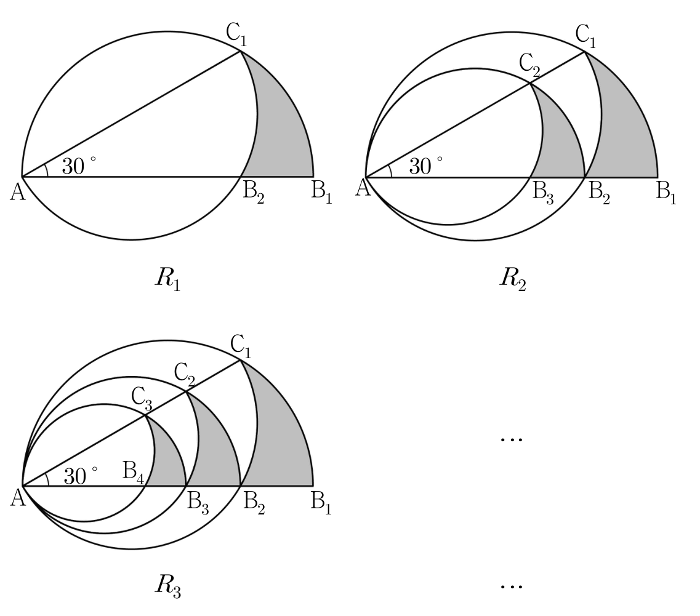
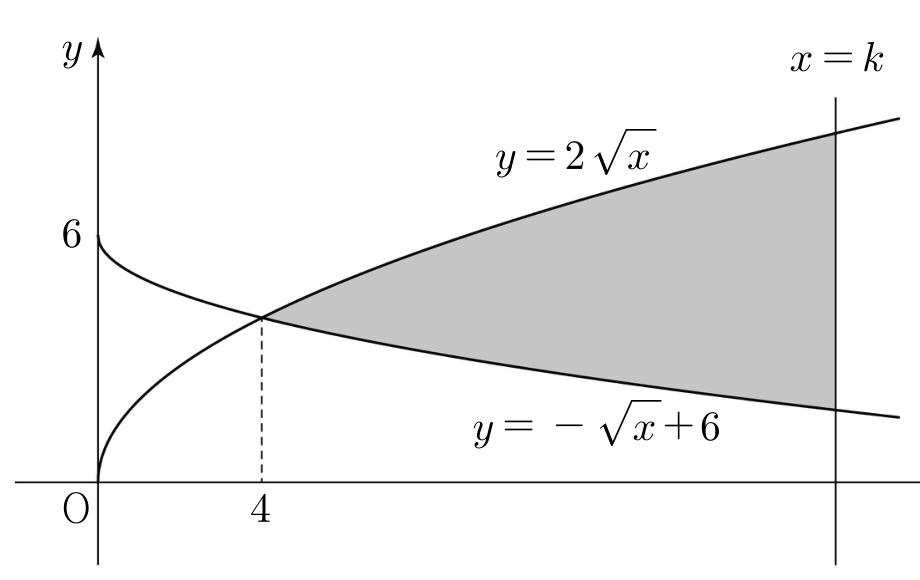

8. 2018년 9월 가형 8번 · 3점 · 고1 범위 · 유리함수와 무리함수 · G2H-04b#14
원본 (내부용)두 상수 $a$, $b$에 대하여 정의역이 $\{ x | 2 \le x \le a . . \}$인 함수 $y= \frac{3}{x-1} -2$의 치역이 $\{ y | -1 \le y \le b \}$일 때, $a+b$의 값은? $($단, $a>2$, $b>-1 )$ [$3$점]
① $5$② $6$③ $7$④ $8$⑤ $9$
원본 정답 ①
원본 풀이 (내부용)[출제의도] 유리함수의 성질 이해하기
\(
f(x)=\frac{3}{x-1}-2
\)
이라 하면
\(
f(2)=b=1,\qquad f(a)=\frac{3}{a-1}-2=-1
\)
\(
a=4,\quad b=1
\)
따라서
\(
a+b=5
\)
생성기 숫자판 1/6 · G2H-04b#14두 상수 $a$, $b$에 대하여 정의역이 $\left\{x\mid 3\le x\le a\right\}$인 함수 $y=\frac{6}{x-1}+1$의 치역이 $\left\{y\mid 3\le y\le b\right\}$일 때, $a+b$의 값으로 옳은 것을 고르세요. (단, $a>3$, $b>3$)
① $6$② $7$③ $8$④ $9$⑤ $10$
정답③ $8$ $x>1$에서 $y=\frac{6}{x-1}+1$은 $x$의 값이 커질수록 $y$의 값이 작아집니다. $x=3$일 때 최댓값 $b=\frac{6}{2}+1=4$ $x=a$일 때 최솟값 $\frac{6}{a-1}+1=3$에서 $a=4$ 따라서 $a+b=8$
생성기 숫자판 3/6 · G2H-04b#14두 상수 $a$, $b$에 대하여 정의역이 $\left\{x\mid 4\le x\le a\right\}$인 함수 $y=\frac{6}{x-2}-2$의 치역이 $\left\{y\mid -1\le y\le b\right\}$일 때, $a+b$의 값으로 옳은 것을 고르세요. (단, $a>4$, $b>-1$)
① $5$② $6$③ $7$④ $8$⑤ $9$
정답⑤ $9$ $x>2$에서 $y=\frac{6}{x-2}-2$는 $x$의 값이 커질수록 $y$의 값이 작아집니다. $x=4$일 때 최댓값 $b=\frac{6}{2}-2=1$ $x=a$일 때 최솟값 $\frac{6}{a-2}-2=-1$에서 $a=8$ 따라서 $a+b=9$
생성기 숫자판 4/6 · G2H-04b#14두 상수 $a$, $b$에 대하여 정의역이 $\left\{x\mid 3\le x\le a\right\}$인 함수 $y=\frac{4}{x-1}-2$의 치역이 $\left\{y\mid -1\le y\le b\right\}$일 때, $a+b$의 값으로 옳은 것을 고르세요. (단, $a>3$, $b>-1$)
① $5$② $6$③ $7$④ $8$⑤ $9$
정답① $5$ $x>1$에서 $y=\frac{4}{x-1}-2$는 $x$의 값이 커질수록 $y$의 값이 작아집니다. $x=3$일 때 최댓값 $b=\frac{4}{2}-2=0$ $x=a$일 때 최솟값 $\frac{4}{a-1}-2=-1$에서 $a=5$ 따라서 $a+b=5$
생성기 숫자판 5/6 · G2H-04b#14두 상수 $a$, $b$에 대하여 정의역이 $\left\{x\mid 6\le x\le a\right\}$인 함수 $y=\frac{10}{x-4}+1$의 치역이 $\left\{y\mid 3\le y\le b\right\}$일 때, $a+b$의 값으로 옳은 것을 고르세요. (단, $a>6$, $b>3$)
① $12$② $13$③ $14$④ $15$⑤ $16$
정답④ $15$ $x>4$에서 $y=\frac{10}{x-4}+1$은 $x$의 값이 커질수록 $y$의 값이 작아집니다. $x=6$일 때 최댓값 $b=\frac{10}{2}+1=6$ $x=a$일 때 최솟값 $\frac{10}{a-4}+1=3$에서 $a=9$ 따라서 $a+b=15$
생성기 숫자판 6/6 · G2H-04b#14두 상수 $a$, $b$에 대하여 정의역이 $\left\{x\mid 3\le x\le a\right\}$인 함수 $y=\frac{4}{x-2}+1$의 치역이 $\left\{y\mid 2\le y\le b\right\}$일 때, $a+b$의 값으로 옳은 것을 고르세요. (단, $a>3$, $b>2$)
① $8$② $9$③ $10$④ $11$⑤ $12$
정답④ $11$ $x>2$에서 $y=\frac{4}{x-2}+1$은 $x$의 값이 커질수록 $y$의 값이 작아집니다. $x=3$일 때 최댓값 $b=\frac{4}{1}+1=5$ $x=a$일 때 최솟값 $\frac{4}{a-2}+1=2$에서 $a=6$ 따라서 $a+b=11$
생성기 숫자판 1/6 · G2M2-01#7$\lim_{x\to 3}\frac{x^{2}+ax+b}{x^{2}-9}=-1$일 때, $a+b$의 값으로 옳은 것을 고르세요. (단, $a$와 $b$는 상수입니다.)
① $15$② $18$③ $21$④ $24$⑤ $27$
정답① $15$ $x\to 3$일 때 (분모)$\to 0$이고 극한값이 존재하므로 (분자)$\to 0$ $9+3a+b=0$, $b=-3a-9$ $\frac{x^{2}+ax-3a-9}{x^{2}-9}=\frac{\left(x-3\right)\left(x+3+a\right)}{\left(x-3\right)\left(x+3\right)}$ 극한값은 $\frac{6+a}{6}=-1$이므로 $a=-12$, $b=27$ 따라서 $a+b=15$
숫자: 원본 3 2 9 3 3 → 쌍둥이 3 9 1 · 같은 수: 3 9
생성기 숫자판 2/6 · G2M2-01#7$\lim_{x\to 1}\frac{x^{2}+ax+b}{x^{2}-1}=2$일 때, $a+b$의 값으로 옳은 것을 고르세요. (단, $a$와 $b$는 상수입니다.)
① $-7$② $-5$③ $-4$④ $-3$⑤ $-1$
정답⑤ $-1$ $x\to 1$일 때 (분모)$\to 0$이고 극한값이 존재하므로 (분자)$\to 0$ $1+a+b=0$, $b=-a-1$ $\frac{x^{2}+ax-a-1}{x^{2}-1}=\frac{\left(x-1\right)\left(x+1+a\right)}{\left(x-1\right)\left(x+1\right)}$ 극한값은 $\frac{2+a}{2}=2$이므로 $a=2$, $b=-3$ 따라서 $a+b=-1$
숫자: 원본 3 2 9 3 3 → 쌍둥이 1 1 2 · 같은 수: 2
생성기 숫자판 3/6 · G2M2-01#7$\lim_{x\to 1}\frac{2x^{2}+ax+b}{x^{2}-1}=0$일 때, $a+b$의 값으로 옳은 것을 고르세요. (단, $a$와 $b$는 상수입니다.)
① $-11$② $-8$③ $-5$④ $-2$⑤ $4$
정답④ $-2$ $x\to 1$일 때 (분모)$\to 0$이고 극한값이 존재하므로 (분자)$\to 0$ $2+a+b=0$, $b=-a-2$ $\frac{2x^{2}+ax-a-2}{x^{2}-1}=\frac{\left(x-1\right)\left(2x+2+a\right)}{\left(x-1\right)\left(x+1\right)}$ 극한값은 $\frac{4+a}{2}=0$이므로 $a=-4$, $b=2$ 따라서 $a+b=-2$
숫자: 원본 3 2 9 3 3 → 쌍둥이 1 2 1 0 · 같은 수: 2
생성기 숫자판 4/6 · G2M2-01#7$\lim_{x\to 1}\frac{x^{2}+ax+b}{x^{2}-1}=-1$일 때, $a+b$의 값으로 옳은 것을 고르세요. (단, $a$와 $b$는 상수입니다.)
① $-7$② $-4$③ $-3$④ $-1$⑤ $5$
정답④ $-1$ $x\to 1$일 때 (분모)$\to 0$이고 극한값이 존재하므로 (분자)$\to 0$ $1+a+b=0$, $b=-a-1$ $\frac{x^{2}+ax-a-1}{x^{2}-1}=\frac{\left(x-1\right)\left(x+1+a\right)}{\left(x-1\right)\left(x+1\right)}$ 극한값은 $\frac{2+a}{2}=-1$이므로 $a=-4$, $b=3$ 따라서 $a+b=-1$
숫자: 원본 3 2 9 3 3 → 쌍둥이 1 1 1
생성기 숫자판 5/6 · G2M2-01#7$\lim_{x\to 2}\frac{3x^{2}+ax+b}{x^{2}-4}=5$일 때, $a+b$의 값으로 옳은 것을 고르세요. (단, $a$와 $b$는 상수입니다.)
① $-26$② $-23$③ $-20$④ $-17$⑤ $-14$
정답③ $-20$ $x\to 2$일 때 (분모)$\to 0$이고 극한값이 존재하므로 (분자)$\to 0$ $12+2a+b=0$, $b=-2a-12$ $\frac{3x^{2}+ax-2a-12}{x^{2}-4}=\frac{\left(x-2\right)\left(3x+6+a\right)}{\left(x-2\right)\left(x+2\right)}$ 극한값은 $\frac{12+a}{4}=5$이므로 $a=8$, $b=-28$ 따라서 $a+b=-20$
숫자: 원본 3 2 9 3 3 → 쌍둥이 2 3 4 5 · 같은 수: 2 3
생성기 숫자판 6/6 · G2M2-01#7$\lim_{x\to 2}\frac{2x^{2}+ax+b}{x^{2}-4}=4$일 때, $a+b$의 값으로 옳은 것을 고르세요. (단, $a$와 $b$는 상수입니다.)
① $-16$② $-13$③ $-10$④ $-7$⑤ $16$
정답① $-16$ $x\to 2$일 때 (분모)$\to 0$이고 극한값이 존재하므로 (분자)$\to 0$ $8+2a+b=0$, $b=-2a-8$ $\frac{2x^{2}+ax-2a-8}{x^{2}-4}=\frac{\left(x-2\right)\left(2x+4+a\right)}{\left(x-2\right)\left(x+2\right)}$ 극한값은 $\frac{8+a}{4}=4$이므로 $a=8$, $b=-24$ 따라서 $a+b=-16$
숫자: 원본 3 2 9 3 3 → 쌍둥이 2 2 4 4 · 같은 수: 2
10. 2018년 9월 가형 10번 · 3점 · 수학Ⅱ 미분 · G2M8-07#2
원본 (내부용)함수 $f ( x ) =x ( x+1 ) ( x-2 )$에서 $x$의 값이 $-2$에서 $0$까지 변할 때의 평균변화율과 $x$의 값이 $0$에서 $a$까지 변할 때의 평균변화율이 서로 같을 때, 양수 $a$의 값은? [$3$점]
① $1$② $2$③ $3$④ $4$⑤ $5$
원본 정답 ③
원본 풀이 (내부용)[출제의도] 평균변화율을 이해하기
\(
\frac{0-(-8)}{0-(-2)}
=\frac{a(a+1)(a-2)-0}{a-0}
\)
\(a>0\)이므로
\(
(a+1)(a-2)=4
\)
\(
(a+2)(a-3)=0
\)
따라서
\(
a=3
\)
생성기 숫자판 1/6 · G2M8-07#2함수 $f\left(x\right)=x\left(x+2\right)\left(x-1\right)$에서 $x$의 값이 $-3$에서 $0$까지 변할 때의 평균변화율과 $x$의 값이 $0$에서 $a$까지 변할 때의 평균변화율이 서로 같을 때, 양수 $a$의 값으로 옳은 것을 고르세요.
① $1$② $2$③ $3$④ $4$⑤ $5$
정답② $2$ $x$의 값이 $-3$에서 $0$까지 변할 때의 평균변화율은 $\frac{f\left(0\right)-f\left(-3\right)}{0-\left(-3\right)}=\frac{0-\left(-12\right)}{3}=4$ $x$의 값이 $0$에서 $a$까지 변할 때의 평균변화율은 $\frac{f\left(a\right)-f\left(0\right)}{a}=\left(a+2\right)\left(a-1\right)$ $\left(a+2\right)\left(a-1\right)=4$에서 $a^{2}+a-6=0$, $\left(a+3\right)\left(a-2\right)=0$ $a>0$이므로 $a=2$
생성기 숫자판 2/6 · G2M8-07#2함수 $f\left(x\right)=x\left(x+1\right)\left(x-3\right)$에서 $x$의 값이 $-2$에서 $0$까지 변할 때의 평균변화율과 $x$의 값이 $0$에서 $a$까지 변할 때의 평균변화율이 서로 같을 때, 양수 $a$의 값으로 옳은 것을 고르세요.
① $3$② $4$③ $5$④ $6$⑤ $7$
정답② $4$ $x$의 값이 $-2$에서 $0$까지 변할 때의 평균변화율은 $\frac{f\left(0\right)-f\left(-2\right)}{0-\left(-2\right)}=\frac{0-\left(-10\right)}{2}=5$ $x$의 값이 $0$에서 $a$까지 변할 때의 평균변화율은 $\frac{f\left(a\right)-f\left(0\right)}{a}=\left(a+1\right)\left(a-3\right)$ $\left(a+1\right)\left(a-3\right)=5$에서 $a^{2}-2a-8=0$, $\left(a+2\right)\left(a-4\right)=0$ $a>0$이므로 $a=4$
생성기 숫자판 3/6 · G2M8-07#2함수 $f\left(x\right)=x\left(x+12\right)\left(x-25\right)$에서 $x$의 값이 $-12$에서 $0$까지 변할 때의 평균변화율과 $x$의 값이 $0$에서 $a$까지 변할 때의 평균변화율이 서로 같을 때, 양수 $a$의 값으로 옳은 것을 고르세요.
① $24$② $25$③ $26$④ $27$⑤ $28$
정답② $25$ $\frac{f(0)-f(-12)}{0-(-12)}=\frac{0-0}{12}=0$ $\frac{f(a)-f(0)}{a}=(a+12)(a-25)$ $(a+-12)(a-25)=0$에서 $a=--12$ 또는 $a=25$ $a>0$이므로 $a=25$
숫자: 원본 1 2 2 0 0 3 → 쌍둥이 12 25 12 0 0 · 같은 수: 0
생성기 숫자판 4/6 · G2M8-07#2함수 $f\left(x\right)=x\left(x+2\right)\left(x-3\right)$에서 $x$의 값이 $-3$에서 $0$까지 변할 때의 평균변화율과 $x$의 값이 $0$에서 $a$까지 변할 때의 평균변화율이 서로 같을 때, 양수 $a$의 값으로 옳은 것을 고르세요.
① $2$② $3$③ $4$④ $5$⑤ $6$
정답③ $4$ $x$의 값이 $-3$에서 $0$까지 변할 때의 평균변화율은 $\frac{f\left(0\right)-f\left(-3\right)}{0-\left(-3\right)}=\frac{0-\left(-18\right)}{3}=6$ $x$의 값이 $0$에서 $a$까지 변할 때의 평균변화율은 $\frac{f\left(a\right)-f\left(0\right)}{a}=\left(a+2\right)\left(a-3\right)$ $\left(a+2\right)\left(a-3\right)=6$에서 $a^{2}-a-12=0$, $\left(a+3\right)\left(a-4\right)=0$ $a>0$이므로 $a=4$
숫자: 원본 1 2 2 0 0 3 → 쌍둥이 2 3 3 0 0 · 같은 수: 0 2 3
생성기 숫자판 5/6 · G2M8-07#2함수 $f\left(x\right)=x\left(x+7\right)\left(x-15\right)$에서 $x$의 값이 $-7$에서 $0$까지 변할 때의 평균변화율과 $x$의 값이 $0$에서 $a$까지 변할 때의 평균변화율이 서로 같을 때, 양수 $a$의 값으로 옳은 것을 고르세요.
① $14$② $15$③ $16$④ $17$⑤ $18$
정답② $15$ $\frac{f(0)-f(-7)}{0-(-7)}=\frac{0-0}{7}=0$ $\frac{f(a)-f(0)}{a}=(a+7)(a-15)$ $(a+-7)(a-15)=0$에서 $a=--7$ 또는 $a=15$ $a>0$이므로 $a=15$
숫자: 원본 1 2 2 0 0 3 → 쌍둥이 7 15 7 0 0 · 같은 수: 0
생성기 숫자판 6/6 · G2M8-07#2함수 $f\left(x\right)=x\left(x+1\right)\left(x-3\right)$에서 $x$의 값이 $-3$에서 $0$까지 변할 때의 평균변화율과 $x$의 값이 $0$에서 $a$까지 변할 때의 평균변화율이 서로 같을 때, 양수 $a$의 값으로 옳은 것을 고르세요.
① $5$② $6$③ $7$④ $8$⑤ $9$
정답① $5$ $x$의 값이 $-3$에서 $0$까지 변할 때의 평균변화율은 $\frac{f\left(0\right)-f\left(-3\right)}{0-\left(-3\right)}=\frac{0-\left(-36\right)}{3}=12$ $x$의 값이 $0$에서 $a$까지 변할 때의 평균변화율은 $\frac{f\left(a\right)-f\left(0\right)}{a}=\left(a+1\right)\left(a-3\right)$ $\left(a+1\right)\left(a-3\right)=12$에서 $a^{2}-2a-15=0$, $\left(a+3\right)\left(a-5\right)=0$ $a>0$이므로 $a=5$
① $\frac{1}{2}$② $1$③ $\frac{3}{2}$④ $2$⑤ $\frac{5}{2}$
원본 정답 ④
원본 풀이 (내부용)[출제의도] 급수의 성질 이해하기
급수
\(
\sum_{n=1}^{\infty}\left(\frac{a_n}{n}+1\right)
\)
이 수렴하므로
\(
\lim_{n\to\infty}\frac{a_n}{n}=-1
\)
따라서
\(
\lim_{n\to\infty}\frac{na_n+3n^2}{n^2+1}
=\lim_{n\to\infty}\frac{\frac{a_n}{n}+3}{1+\frac1{n^2}}=2
\)
생성기 숫자판 1/6 · G2M6-03#3수열 $\left\{a_{n}\right\}$에 대하여 급수 $\sum_{n=1}^{\infty}\left(\frac{a_{n}}{n}+1\right)$이 수렴할 때, $\lim_{n\to\infty}\frac{na_{n}+3n^{2}}{n^{2}+5}$의 값으로 옳은 것을 고르세요.
① $2$② $\frac{5}{2}$③ $3$④ $\frac{7}{2}$⑤ $4$
정답① $2$ 급수가 수렴하므로 $\lim_{n\to\infty}\left(\frac{a_{n}}{n}+1\right)=0$, 즉 $\lim_{n\to\infty}\frac{a_{n}}{n}=-1$ 분모와 분자를 각각 $n^{2}$으로 나누면 $\lim_{n\to\infty}\frac{\frac{a_{n}}{n}+3}{1+\frac{5}{n^{2}}}$ $=-1+3$ $=2$
숫자: 원본 1 1 3 1 3 → 쌍둥이 1 1 3 5 · 같은 수: 1 3
생성기 숫자판 2/6 · G2M6-03#3수열 $\left\{a_{n}\right\}$에 대하여 급수 $\sum_{n=1}^{\infty}\left(\frac{a_{n}}{n}+3\right)$이 수렴할 때, $\lim_{n\to\infty}\frac{na_{n}+6n^{2}}{n^{2}+3}$의 값으로 옳은 것을 고르세요.
① $\frac{5}{2}$② $3$③ $\frac{7}{2}$④ $4$⑤ $\frac{9}{2}$
정답② $3$ 급수가 수렴하므로 $\lim_{n\to\infty}\left(\frac{a_{n}}{n}+3\right)=0$, 즉 $\lim_{n\to\infty}\frac{a_{n}}{n}=-3$ 분모와 분자를 각각 $n^{2}$으로 나누면 $\lim_{n\to\infty}\frac{\frac{a_{n}}{n}+6}{1+\frac{3}{n^{2}}}$ $=-3+6$ $=3$
숫자: 원본 1 1 3 1 3 → 쌍둥이 1 3 6 3 · 같은 수: 1 3
생성기 숫자판 3/6 · G2M6-03#3수열 $\left\{a_{n}\right\}$에 대하여 급수 $\sum_{n=1}^{\infty}\left(\frac{a_{n}}{n}+4\right)$가 수렴할 때, $\lim_{n\to\infty}\frac{na_{n}+5n^{2}}{n^{2}+2}$의 값으로 옳은 것을 고르세요.
① $1$② $\frac{3}{2}$③ $2$④ $\frac{5}{2}$⑤ $5$
정답① $1$ 급수가 수렴하므로 $\lim_{n\to\infty}\left(\frac{a_{n}}{n}+4\right)=0$, 즉 $\lim_{n\to\infty}\frac{a_{n}}{n}=-4$ 분모와 분자를 각각 $n^{2}$으로 나누면 $\lim_{n\to\infty}\frac{\frac{a_{n}}{n}+5}{1+\frac{2}{n^{2}}}$ $=-4+5$ $=1$
숫자: 원본 1 1 3 1 3 → 쌍둥이 1 4 5 2 · 같은 수: 1
생성기 숫자판 4/6 · G2M6-03#3수열 $\left\{a_{n}\right\}$에 대하여 급수 $\sum_{n=1}^{\infty}\left(\frac{a_{n}}{n}+1\right)$이 수렴할 때, $\lim_{n\to\infty}\frac{na_{n}+2n^{2}}{n^{2}+4}$의 값으로 옳은 것을 고르세요.
① $1$② $\frac{3}{2}$③ $2$④ $\frac{5}{2}$⑤ $3$
정답① $1$ 급수가 수렴하므로 $\lim_{n\to\infty}\left(\frac{a_{n}}{n}+1\right)=0$, 즉 $\lim_{n\to\infty}\frac{a_{n}}{n}=-1$ 분모와 분자를 각각 $n^{2}$으로 나누면 $\lim_{n\to\infty}\frac{\frac{a_{n}}{n}+2}{1+\frac{4}{n^{2}}}$ $=-1+2$ $=1$
숫자: 원본 1 1 3 1 3 → 쌍둥이 1 1 2 4 · 같은 수: 1
생성기 숫자판 5/6 · G2M6-03#3수열 $\left\{a_{n}\right\}$에 대하여 급수 $\sum_{n=1}^{\infty}\left(\frac{a_{n}}{n}+4\right)$가 수렴할 때, $\lim_{n\to\infty}\frac{na_{n}+6n^{2}}{n^{2}+3}$의 값으로 옳은 것을 고르세요.
① $\frac{1}{2}$② $1$③ $\frac{3}{2}$④ $2$⑤ $\frac{5}{2}$
정답④ $2$ 급수가 수렴하므로 $\lim_{n\to\infty}\left(\frac{a_{n}}{n}+4\right)=0$, 즉 $\lim_{n\to\infty}\frac{a_{n}}{n}=-4$ 분모와 분자를 각각 $n^{2}$으로 나누면 $\lim_{n\to\infty}\frac{\frac{a_{n}}{n}+6}{1+\frac{3}{n^{2}}}$ $=-4+6$ $=2$
숫자: 원본 1 1 3 1 3 → 쌍둥이 1 4 6 3 · 같은 수: 1 3
생성기 숫자판 6/6 · G2M6-03#3수열 $\left\{a_{n}\right\}$에 대하여 급수 $\sum_{n=1}^{\infty}\left(\frac{a_{n}}{n}+4\right)$가 수렴할 때, $\lim_{n\to\infty}\frac{na_{n}+8n^{2}}{2n^{2}+1}$의 값으로 옳은 것을 고르세요.
① $\frac{1}{2}$② $1$③ $\frac{3}{2}$④ $2$⑤ $\frac{5}{2}$
정답④ $2$ 급수가 수렴하므로 $\lim_{n\to\infty}\left(\frac{a_{n}}{n}+4\right)=0$, 즉 $\lim_{n\to\infty}\frac{a_{n}}{n}=-4$ 분모와 분자를 각각 $n^{2}$으로 나누면 $\lim_{n\to\infty}\frac{\frac{a_{n}}{n}+8}{2+\frac{1}{n^{2}}}$ $=\frac{-4+8}{2}$ $=2$
숫자: 원본 1 1 3 1 3 → 쌍둥이 1 4 8 2 1 · 같은 수: 1
12. 2018년 9월 가형 12번 · 3점 · 고1 범위 · 함수 · G2H-04b#1
원본 (내부용)두 함수 $f ( x ) =4x-5$, $g ( x ) =3x+1$ 에 대하여 $( f \circ g^{-1} ) ( k ) =7$을 만족시키는 실수 $k$의 값은? [$3$점]
① $4$② $7$③ $10$④ $13$⑤ $16$
원본 정답 ③
원본 풀이 (내부용)[출제의도] 역함수 이해하기
\(
g^{-1}(k)=a
\)
라 하면
\(
(f\circ g^{-1})(k)=f(a)=4a-5=7,\qquad a=3
\)
\(
g^{-1}(k)=3
\)
이므로
\(
k=g(3)=10
\)
생성기 숫자판 1/6 · G2H-04b#1두 함수 $f\left(x\right)=2x-6$, $g\left(x\right)=2x-1$에 대하여 $\left(f\circ g^{-1}\right)\left(k\right)=-4$를 만족시키는 실수 $k$의 값으로 옳은 것을 고르세요.
① $0$② $1$③ $2$④ $3$⑤ $4$
정답② $1$ $g^{-1}\left(k\right)=m$이라 하면 $f\left(m\right)=-4$, $2m-6=-4$이므로 $m=1$ $g^{-1}\left(k\right)=1$에서 $k=g\left(1\right)=1$
생성기 숫자판 2/6 · G2H-04b#1두 함수 $f\left(x\right)=7x-23$, $g\left(x\right)=11x-13$에 대하여 $\left(f\circ g^{-1}\right)\left(k\right)=19$? 만족시키는 실수 $k$의 값으로 옳은 것을 고르세요.
① $51$② $52$③ $53$④ $54$⑤ $55$
정답③ $53$ $g^{-1}(k)=m$이라 하면 $f(m)=19$, $7m-23=19$에서 $m=6$입니다. $g^{-1}(k)=6$이므로 $\frac{k+13}{11}=6$에서 $k=53$입니다. 따라서 $k=53$입니다.
생성기 숫자판 3/6 · G2H-04b#1두 함수 $f\left(x\right)=7x-23$, $g\left(x\right)=11x-13$에 대하여 $\left(f\circ g^{-1}\right)\left(k\right)=21$? 만족시키는 실수 $k$의 값으로 옳은 것을 고르세요.
① $\frac{379}{7}$② $\frac{386}{7}$③ $\frac{393}{7}$④ $\frac{400}{7}$⑤ $\frac{407}{7}$
정답③ $\frac{393}{7}$ $g^{-1}(k)=m$이라 하면 $f(m)=21$, $7m-23=21$에서 $m=\frac{44}{7}$입니다. $g^{-1}(k)=\frac{44}{7}$이므로 $\frac{k+13}{11}=\frac{44}{7}$에서 $k=\frac{393}{7}$입니다. 따라서 $k=\frac{393}{7}$입니다.
생성기 숫자판 4/6 · G2H-04b#1두 함수 $f\left(x\right)=2x+1$, $g\left(x\right)=3x+5$에 대하여 $\left(f\circ g^{-1}\right)\left(k\right)=115$를 만족시키는 실수 $k$의 값으로 옳은 것을 고르세요.
① $174$② $175$③ $176$④ $177$⑤ $178$
정답③ $176$ $g^{-1}\left(k\right)=m$이라 하면 $f\left(m\right)=115$, $2m+1=115$이므로 $m=57$ $g^{-1}\left(k\right)=57$에서 $k=g\left(57\right)=176$
생성기 숫자판 5/6 · G2H-04b#1두 함수 $f\left(x\right)=7x-23$, $g\left(x\right)=11x-13$에 대하여 $\left(f\circ g^{-1}\right)\left(k\right)=26$? 만족시키는 실수 $k$의 값으로 옳은 것을 고르세요.
① $62$② $63$③ $64$④ $65$⑤ $66$
정답③ $64$ $g^{-1}(k)=m$이라 하면 $f(m)=26$, $7m-23=26$에서 $m=7$입니다. $g^{-1}(k)=7$이므로 $\frac{k+13}{11}=7$에서 $k=64$입니다. 따라서 $k=64$입니다.
생성기 숫자판 6/6 · G2H-04b#1두 함수 $f\left(x\right)=7x-23$, $g\left(x\right)=11x-13$에 대하여 $\left(f\circ g^{-1}\right)\left(k\right)=13$? 만족시키는 실수 $k$의 값으로 옳은 것을 고르세요.
① $\frac{291}{7}$② $\frac{298}{7}$③ $\frac{305}{7}$④ $\frac{312}{7}$⑤ $\frac{319}{7}$
정답③ $\frac{305}{7}$ $g^{-1}(k)=m$이라 하면 $f(m)=13$, $7m-23=13$에서 $m=\frac{36}{7}$입니다. $g^{-1}(k)=\frac{36}{7}$이므로 $\frac{k+13}{11}=\frac{36}{7}$에서 $k=\frac{305}{7}$입니다. 따라서 $k=\frac{305}{7}$입니다.
원본 (내부용)다항함수 $f ( x )$가 모든 실수 $x$에 대하여 $f ( x+1 ) -f(1)=x^{3} +13x^{2} +26x$ 를 만족시킬 때, $f ' (1)$의 값은? [$3$점]
① $26$② $30$③ $34$④ $38$⑤ $42$
원본 정답 ①
원본 풀이 (내부용)[출제의도] 미분계수의 정의를 활용하여 수학 내적 문제 해결하기
\(
\begin{aligned}
f'(1)
&=\lim_{h\to0}\frac{f(1+h)-f(1)}h\\
&=\lim_{h\to0}\frac{h^3+13h^2+26h}{h}\\
&=\lim_{h\to0}(h^2+13h+26)=26
\end{aligned}
\)
생성기 숫자판 1/6 · G2M6-02#6다항함수 $f\left(x\right)$가 모든 실수 $x$에 대하여 $f\left(x+3\right)-f\left(3\right)=x^{3}+7x^{2}+15x$를 만족시킬 때, $f'\left(3\right)$의 값으로 옳은 것을 고르세요.
생성기 숫자판 2/6 · G2M6-02#6다항함수 $f\left(x\right)$가 모든 실수 $x$에 대하여 $f\left(x+1\right)-f\left(1\right)=x^{3}+8x^{2}+14x$를 만족시킬 때, $f'\left(1\right)$의 값으로 옳은 것을 고르세요.
생성기 숫자판 3/6 · G2M6-02#6다항함수 $f\left(x\right)$가 모든 실수 $x$에 대하여 $f\left(x+2\right)-f\left(2\right)=x^{3}+3x^{2}+32x$를 만족시킬 때, $f'\left(2\right)$의 값으로 옳은 것을 고르세요.
생성기 숫자판 4/6 · G2M6-02#6다항함수 $f\left(x\right)$가 모든 실수 $x$에 대하여 $f\left(x+3\right)-f\left(3\right)=x^{3}+8x^{2}+11x$를 만족시킬 때, $f'\left(3\right)$의 값으로 옳은 것을 고르세요.
생성기 숫자판 5/6 · G2M6-02#6다항함수 $f\left(x\right)$가 모든 실수 $x$에 대하여 $f\left(x+2\right)-f\left(2\right)=x^{3}+12x^{2}+22x$를 만족시킬 때, $f'\left(2\right)$의 값으로 옳은 것을 고르세요.
생성기 숫자판 6/6 · G2M6-02#6다항함수 $f\left(x\right)$가 모든 실수 $x$에 대하여 $f\left(x+1\right)-f\left(1\right)=x^{3}+3x^{2}+9x$를 만족시킬 때, $f'\left(1\right)$의 값으로 옳은 것을 고르세요.
원본 (내부용)수직선 위를 움직이는 점 $\mathrm{P}$의 시각 $t$$( t \ge 0 )$에서의 속도 $v ( t )$가 $v(t)=12-3t^{2}$ 이다. $t=0$부터 $t=4$까지 점 $\mathrm{P}$가 움직인 거리는? [$4$점]
① $44$② $48$③ $52$④ $56$⑤ $60$
원본 정답 ②
원본 풀이 (내부용)[출제의도] 정적분을 활용하여 수학 내적 문제 해결하기
\(
v(t)=-3(t+2)(t-2)
\)
이고 \(v(2)=0\)이므로
\(
\begin{aligned}
\int_0^4|12-3t^2|\,dt
&=\int_0^2(12-3t^2)\,dt+\int_2^4(-12+3t^2)\,dt\\
&=[12t-t^3]_0^2+[-12t+t^3]_2^4\\
&=16+32=48
\end{aligned}
\)
쌍둥이 1/5 · 4점 쌍둥이수직선 위를 움직이는 점 $\mathrm{P}$의 시각 $t\left(t\ge 0\right)$에서의 속도 $v\left(t\right)$가 $v\left(t\right)=8-2t$입니다. $t=0$부터 $t=6$까지 점 $\mathrm{P}$가 움직인 거리로 옳은 것을 고르세요.
① $8$② $12$③ $16$④ $20$⑤ $24$
정답④ $20$ $v\left(t\right)=0$에서 $t=4$이고, 이 시각에서 $v\left(t\right)$의 부호가 바뀝니다. $\int_{0}^{4}v\left(t\right)dt=\left[-t^{2}+8t\right]_{0}^{4}=16$ $\int_{4}^{6}v\left(t\right)dt=\left[-t^{2}+8t\right]_{4}^{6}=-4$ 움직인 거리는 $\int_{0}^{6}\left|v\left(t\right)\right|dt=\left|\int_{0}^{4}v\left(t\right)dt\right|+\left|\int_{4}^{6}v\left(t\right)dt\right|$ $=16+4$ $=20$
숫자: 원본 0 12 3 0 4 4 → 쌍둥이 0 8 2 0 6 · 같은 수: 0
쌍둥이 2/5 · 4점 쌍둥이수직선 위를 움직이는 점 $\mathrm P$의 시각 $t(t\ge0)$에서의 속도 $v(t)=45-5t^2$입니다. $t=0$부터 $t=6$까지 점 $\mathrm P$가 움직인 거리를 구하세요.
① $246$② $258$③ $270$④ $282$⑤ $294$
정답③ $270$ $v(t)=0$은 $t=3$이고, $0\le t<3$에서는 속도가 양수, $3<t\le6$에서는 음수입니다. 움직인 거리는 $\int_0^3(45-5t^2)\,dt+\int_3^6(5t^2-45)\,dt=90+180=270$입니다.
숫자: 원본 0 12 3 0 4 4 → 쌍둥이 0 45 5 0 6 · 같은 수: 0
쌍둥이 3/5 · 4점 쌍둥이수직선 위를 움직이는 점 $\mathrm{P}$의 시각 $t\left(t\ge 0\right)$에서의 속도 $v\left(t\right)$가 $v\left(t\right)=t^{2}-4t$입니다. $t=0$부터 $t=6$까지 점 $\mathrm{P}$가 움직인 거리로 옳은 것을 고르세요.
① $\frac{52}{3}$② $\frac{64}{3}$③ $\frac{76}{3}$④ $\frac{88}{3}$⑤ $\frac{100}{3}$
정답② $\frac{64}{3}$ $v\left(t\right)=0$에서 $t=4$이고, 이 시각에서 $v\left(t\right)$의 부호가 바뀝니다. $\int_{0}^{4}v\left(t\right)dt=\left[\frac{t^{3}}{3}-2t^{2}\right]_{0}^{4}=-\frac{32}{3}$ $\int_{4}^{6}v\left(t\right)dt=\left[\frac{t^{3}}{3}-2t^{2}\right]_{4}^{6}=\frac{32}{3}$ 움직인 거리는 $\int_{0}^{6}\left|v\left(t\right)\right|dt=\left|\int_{0}^{4}v\left(t\right)dt\right|+\left|\int_{4}^{6}v\left(t\right)dt\right|$ $=\frac{32}{3}+\frac{32}{3}$ $=\frac{64}{3}$
숫자: 원본 0 12 3 0 4 4 → 쌍둥이 0 4 0 6 · 같은 수: 0 4
쌍둥이 4/5 · 4점 쌍둥이수직선 위를 움직이는 점 $\mathrm{P}$의 시각 $t(t\ge0)$에서의 속도가 $v(t)=25-t^2$입니다. $t=0$부터 $t=7$까지 점 $\mathrm{P}$가 움직인 거리를 구하세요.
쌍둥이 2/5 · 4점 쌍둥이등차수열 $\left\{a_{n}\right\}$이 $\sum_{k=1}^{13}a_{k}=338$, $\sum_{k=1}^{19}\left(-1\right)^{k}a_{k}=-38$을 만족시킬 때, $a_{19}$의 값으로 옳은 것을 고르세요.
쌍둥이 3/5 · 4점 쌍둥이등차수열 $\left\{a_{n}\right\}$이 $\sum_{k=1}^{11}a_{k}=242$, $\sum_{k=1}^{17}\left(-1\right)^{k}a_{k}=-37$을 만족시킬 때, $a_{17}$의 값으로 옳은 것을 고르세요.
쌍둥이 4/5 · 4점 쌍둥이등차수열 $\left\{a_{n}\right\}$이 $\sum_{k=1}^{9}a_{k}=81$, $\sum_{k=1}^{23}\left(-1\right)^{k}a_{k}=-23$을 만족시킬 때, $a_{23}$의 값으로 옳은 것을 고르세요.
원본 (내부용)함수 $f ( x ) =a ( x-1 )^{2} +1$에 대하여 $\lim_{x \to \infty } {\{ \sqrt{f ( -x )} - \sqrt{f ( x )} \}} =6$ 일 때, 양수 $a$의 값은? [$4$점]
① $3$② $5$③ $7$④ $9$⑤ $11$
원본 정답 ④
원본 풀이 (내부용)[출제의도] 함수의 극한 이해하기
\(
\begin{aligned}
\lim_{x\to\infty}\{\sqrt{f(-x)}-\sqrt{f(x)}\}
&=\lim_{x\to\infty}
\left\{\sqrt{a(-x-1)^2+1}-\sqrt{a(x-1)^2+1}\right\}\\
&=\lim_{x\to\infty}
\frac{4ax}{\sqrt{a(x+1)^2+1}+\sqrt{a(x-1)^2+1}}\\
&=\frac{4a}{2\sqrt a}=6
\end{aligned}
\)
따라서
\(
a=9
\)
쌍둥이 1/5 · 4점 쌍둥이함수 $f\left(x\right)=a\left(x-3\right)^{2}+1$에 대하여 $\lim_{x\to\infty}\left\{\sqrt{f\left(-x\right)}-\sqrt{f\left(x\right)}\right\}=12$일 때, 양수 $a$의 값으로 옳은 것을 고르세요.
① $2$② $3$③ $4$④ $5$⑤ $6$
정답③ $4$ $f\left(-x\right)=a\left(x+3\right)^{2}+1$이므로 $f\left(-x\right)-f\left(x\right)=12ax$ 분모와 분자에 같은 식을 곱하면 $\lim_{x\to\infty}\frac{\left\{f\left(-x\right)-f\left(x\right)\right\}}{\sqrt{f\left(-x\right)}+\sqrt{f\left(x\right)}}$ 분모와 분자를 각각 $x$로 나누면 $=\frac{12a}{2\sqrt{a}}=6\sqrt{a}$ $6\sqrt{a}=12$에서 $\sqrt{a}=2$ $a=4$
숫자: 원본 1 1 6 4 → 쌍둥이 3 1 12 · 같은 수: 1
쌍둥이 2/5 · 4점 쌍둥이함수 $f\left(x\right)=a\left(x-2\right)^{2}+3$에 대하여 $\lim_{x\to\infty}\left\{\sqrt{f\left(-x\right)}-\sqrt{f\left(x\right)}\right\}=8$일 때, 양수 $a$의 값으로 옳은 것을 고르세요.
① $1$② $2$③ $3$④ $4$⑤ $5$
정답④ $4$ $f\left(-x\right)=a\left(x+2\right)^{2}+3$이므로 $f\left(-x\right)-f\left(x\right)=8ax$ 분모와 분자에 같은 식을 곱하면 $\lim_{x\to\infty}\frac{\left\{f\left(-x\right)-f\left(x\right)\right\}}{\sqrt{f\left(-x\right)}+\sqrt{f\left(x\right)}}$ 분모와 분자를 각각 $x$로 나누면 $=\frac{8a}{2\sqrt{a}}=4\sqrt{a}$ $4\sqrt{a}=8$에서 $\sqrt{a}=2$ $a=4$
숫자: 원본 1 1 6 4 → 쌍둥이 2 3 8
쌍둥이 3/5 · 4점 쌍둥이함수 $f\left(x\right)=a\left(x+1\right)^{2}+2$에 대하여 $\lim_{x\to\infty}\left\{\sqrt{f\left(x\right)}-\sqrt{f\left(-x\right)}\right\}=10$일 때, 양수 $a$의 값으로 옳은 것을 고르세요.
① $25$② $26$③ $27$④ $28$⑤ $29$
정답① $25$ $f\left(-x\right)=a\left(x-1\right)^{2}+2$이므로 $f\left(-x\right)-f\left(x\right)=-4ax$ 분모와 분자에 같은 식을 곱하면 $\lim_{x\to\infty}\frac{-\left\{f\left(-x\right)-f\left(x\right)\right\}}{\sqrt{f\left(-x\right)}+\sqrt{f\left(x\right)}}$ 분모와 분자를 각각 $x$로 나누면 $=\frac{4a}{2\sqrt{a}}=2\sqrt{a}$ $2\sqrt{a}=10$에서 $\sqrt{a}=5$ $a=25$
숫자: 원본 1 1 6 4 → 쌍둥이 1 2 10 · 같은 수: 1
쌍둥이 4/5 · 4점 쌍둥이함수 $f(x)=a(x-4)^2+5$에 대하여 $\lim_{x\to\infty}\left\{\sqrt{f(-x)}-\sqrt{f(x)}\right\}=24$일 때, 양수 $a$에 대하여 $a^2$의 값을 구하세요.
① $61$② $71$③ $81$④ $91$⑤ $101$
정답③ $81$ $x\to\infty$일 때 제곱근의 차는 $2\times 4\sqrt{a}$에 가까워집니다. 따라서 $2\times 4\sqrt{a}=24$이므로 $\sqrt{a}=3$, $a=9$입니다. 그러므로 $a^2=81$입니다.
숫자: 원본 1 1 6 4 → 쌍둥이 4 5 24 · 같은 수: 4
쌍둥이 5/5 · 4점 쌍둥이함수 $f(x)=a(x+2)^2+7$에 대하여 $\lim_{x\to\infty}\left\{\sqrt{f(x)}-\sqrt{f(-x)}\right\}=20$일 때, 양수 $a$에 대하여 $a^2$의 값을 구하세요.
① $605$② $615$③ $625$④ $635$⑤ $645$
정답③ $625$ $x\to\infty$일 때 제곱근의 차는 $-2\times -2\sqrt{a}$에 가까워집니다. 따라서 $-2\times (-2)\sqrt{a}=20$이므로 $\sqrt{a}=5$, $a=25$입니다. 그러므로 $a^2=625$입니다.
쌍둥이 4/5 · 4점 쌍둥이첫째항이 $3$이고 공비가 $r$ ($r>1$)인 등비수열 $\{a_n\}$에 대하여 $b_n=(\log_{a_1}a_2)(\log_{a_2}a_3)\cdots(\log_{a_n}a_{n+1})$라 하겠습니다. $\sum_{k=1}^{5}b_k=25$일 때, $\log_3r$의 값을 구하세요.
쌍둥이 5/5 · 4점 쌍둥이첫째항이 $7$이고 공비가 $r$ ($r>1$)인 등비수열 $\{a_n\}$에 대하여 $b_n=(\log_{a_1}a_2)(\log_{a_2}a_3)\cdots(\log_{a_n}a_{n+1})$라 하겠습니다. $\sum_{k=1}^{9}b_k=54$일 때, $\log_7r$의 값을 구하세요.
원본 (내부용)다음은 $\lim_{n \to \infty } {\frac{1^{4} +2^{4} +3^{4} + \cdots +n^{4}}{ ( 1+2+3+ \cdots +n ) ( 1^{2} +2^{2} +3^{2} + \cdots +n^{2} )}}$ 의 값을 구하는 과정의 일부이다. $S_{n} =$$\frac{1^{4} +2^{4} +3^{4} + \cdots +n^{4}}{ ( 1+2+3+ \cdots +n ) ( 1^{2} +2^{2} +3^{2} + \cdots +n^{2} )}$ 이라 하면 $S_{n}$$= \frac{{\boxed{ (가) }} \times \sum_{k=1}^{n} k^{4}}{n^{2} ( n+1 )^{2} ( 2n+1 )}$ $= {\boxed{ (가) }} \times \frac{{\boxed{(나) }}}{ ( n+1 )^{2} ( 2n+1 )} \times \sum_{k=1}^{n} \frac{k^{4}}{n^{5}}$ 이다. 따라서 $\lim_{n\to \infty } {S_{n}}$$=6 \lim_{n \to \infty } {\sum_{k=1}^{n} \{ ( \frac{k}{n} )^{4} \frac{1}{n} \}}$ 이므로 정적분의 정의에 의하여 $\lim_{n\to \infty } {S_{n}}$$=6 \int_{0}^{1} {f ( x ) } dx= {\boxed{(다) }}$ 이다. 위의 (가), (다)에 알맞은 수를 각각 $p$, $q$라 하고 (나)에 알맞은 식을 $g(n)$이라 할 때, $g ( 2 ) + \frac{p}{q}$의 값은? [$4$점]
① $18$② $21$③ $24$④ $27$⑤ $30$
원본 정답 ①
원본 풀이 (내부용)[출제의도] 정적분의 정의를 활용하여 추론하기
\(
S_n=\frac{1^4+2^4+3^4+\cdots+n^4}
{(1+2+3+\cdots+n)(1^2+2^2+3^2+\cdots+n^2)}
\)
이라 하면
\(
S_n=\frac{\boxed{12}\times\sum_{k=1}^n k^4}{n^2(n+1)^2(2n+1)}
\)
\(
=\boxed{12}\times\frac{\boxed{n^3}}{(n+1)^2(2n+1)}
\sum_{k=1}^n\frac{k^4}{n^5}
\)
이다. 따라서
\(
\lim_{n\to\infty}S_n
=6\lim_{n\to\infty}\sum_{k=1}^n\left\{\left(\frac{k}{n}\right)^4\frac1n\right\}
\)
이므로 정적분의 정의에 의하여
\(
\lim_{n\to\infty}S_n=6\int_0^1f(x)\,dx=\boxed{\frac65}
\)
이다.
\(
p=12,\qquad g(n)=n^3,\qquad q=\frac65
\)
고 2
따라서
\(
g(2)+\frac pq=18
\)
쌍둥이 1/5 · 4점 쌍둥이다음은 $\displaystyle \lim_{n\to\infty}\frac{1^{5}+2^{5}+\cdots+n^{5}}{(1^{2}+2^{2}+\cdots+n^{2})(1^{2}+2^{2}+\cdots+n^{2})}$의 값을 구하는 과정이다. $S_n$을 위 분수라 하면\[S_n=\frac{\boxed{(가)}\,\boxed{(나)}\sum_{k=1}^n k^{5}}{\left(n + 1\right)^{2} \left(2 n + 1\right)^{2}n^{6}}=\boxed{(가)}\times\frac{\boxed{(나)}}{\left(n + 1\right)^{2} \left(2 n + 1\right)^{2}}\sum_{k=1}^n\frac{k^{5}}{n^{6}}.\]따라서 구분구적법에 의하여 $\lim_{n\to\infty} S_n=\boxed{(가)}\int_0^1x^{5}dx=\boxed{(다)}$이다. (가), (다)에 알맞은 수를 각각 $p,q$라 하고 (나)에 알맞은 식을 $g(n)$이라 할 때, $g(4)-\frac pq$의 값은? [4점]
① $230$② $231$③ $232$④ $233$⑤ $234$
정답③ $232$ 거듭제곱합을 대입하면 분모는 $\frac{n^{2} \left(n + 1\right)^{2} \left(2 n + 1\right)^{2}}{36}$이고, 정규화 계수는 $\frac{36 n^{4}}{\left(n + 1\right)^{2} \left(2 n + 1\right)^{2}}$이므로 (가)=$36$, (나)=$n^{4}$이다. 이 계수는 $9$로 수렴하고 $\int_0^1x^5dx=1/6$이므로 (다)=$\frac{3}{2}$이다. 따라서 $g(4)-p/q=256-24=232$.
쌍둥이 2/5 · 4점 쌍둥이다음은 $\displaystyle \lim_{n\to\infty}\frac{1^{3}+2^{3}+\cdots+n^{3}}{(1^{1}+2^{1}+\cdots+n^{1})(1^{1}+2^{1}+\cdots+n^{1})}$의 값을 구하는 과정이다. $S_n$을 위 분수라 하면\[S_n=\frac{\boxed{(가)}\,\boxed{(나)}\sum_{k=1}^n k^{3}}{\left(n + 1\right)^{2}n^{4}}=\boxed{(가)}\times\frac{\boxed{(나)}}{\left(n + 1\right)^{2}}\sum_{k=1}^n\frac{k^{3}}{n^{4}}.\]따라서 구분구적법에 의하여 $\lim_{n\to\infty} S_n=\boxed{(가)}\int_0^1x^{3}dx=\boxed{(다)}$이다. (가), (다)에 알맞은 수를 각각 $p,q$라 하고 (나)에 알맞은 식을 $g(n)$이라 할 때, $g(3)-\frac pq$의 값은? [4점]
쌍둥이 3/5 · 4점 쌍둥이다음은 $\displaystyle \lim_{n\to\infty}\frac{1^{5}+2^{5}+\cdots+n^{5}}{(1^{1}+2^{1}+\cdots+n^{1})(1^{3}+2^{3}+\cdots+n^{3})}$의 값을 구하는 과정이다. $S_n$을 위 분수라 하면\[S_n=\frac{\boxed{(가)}\,\boxed{(나)}\sum_{k=1}^n k^{5}}{\left(n + 1\right)^{3}n^{6}}=\boxed{(가)}\times\frac{\boxed{(나)}}{\left(n + 1\right)^{3}}\sum_{k=1}^n\frac{k^{5}}{n^{6}}.\]따라서 구분구적법에 의하여 $\lim_{n\to\infty} S_n=\boxed{(가)}\int_0^1x^{5}dx=\boxed{(다)}$이다. (가), (다)에 알맞은 수를 각각 $p,q$라 하고 (나)에 알맞은 식을 $g(n)$이라 할 때, $g(3)+2\frac pq$의 값은? [4점]
쌍둥이 4/5 · 4점 쌍둥이다음 극한을 구하는 과정이다. $S_n=\frac{1^7+2^7+\cdots+n^7}{(1^3+2^3+\cdots+n^3)^2}$라 하면 $S_n=\frac{\boxed{(가)}\,\boxed{(나)}\sum_{k=1}^n k^7}{(n+1)^4n^8}=\boxed{(가)}\times\frac{\boxed{(나)}}{(n+1)^4}\sum_{k=1}^n\frac{k^7}{n^8}$이다. 따라서 구분구적법으로 극한은 $\boxed{(가)}\int_0^1x^7dx=\boxed{(다)}$이다. (가), (다)를 각각 $p,q$, (나)를 $g(n)$이라 할 때 $g(3)-p/q$를 구하시오.
쌍둥이 5/5 · 4점 쌍둥이다음 극한을 구하는 과정이다. $S_n=\frac{1^3+2^3+\cdots+n^3}{(1+2+\cdots+n)^2}$라 하면
\[S_n=\frac{\boxed{(가)}\,\boxed{(나)}\sum_{k=1}^n k^3}{n^2(n+1)^2}=\boxed{(가)}\times\frac{\boxed{(나)}}{(n+1)^2}\sum_{k=1}^n\frac{k^3}{n^4}\]
이다. 따라서 구분구적법으로 극한은 $\boxed{(가)}\int_0^1x^3dx=\boxed{(다)}$이다. (가), (다)를 각각 $p,q$, (나)를 $g(n)$이라 할 때 $g(4)+\frac pq$를 구하시오.
원본 (내부용)$2$ 이상의 자연수 $n$에 대하여 좌표평면 위의 두 원 $C_{1} :$$x^{2} +y^{2} =(n-1)^{2}$, $C_{2} :$$(x-n)^{2} +y^{2} =n^{2}$ 이 만나는 서로 다른 두 점을 각각 $\mathrm{P}_{ n}$, $\mathrm{Q}_{ n}$이라 할 때, ${\frac{{bar{\mathrm{P}_{ n} Q_{ n} }}}{n} }$ 의 값은? [$4$점] $\lim_{n \to \infty }$
① $\frac{\sqrt{3}}{3}$② $\frac{\sqrt{2}}{2}$③ $1$④ $\sqrt{2}$⑤ $\sqrt{3}$
원본 정답 ⑤
원본 풀이 (내부용)[출제의도] 수열의 극한을 활용하여 수학 내적 문제 해결하기
원 \(C_1,C_2\)의 중심을 각각 \(O_1,O_2\)라 하자.
점 \(O_2\)에서 선분 \(O_1P_n\)에 내린 수선의 발을 \(H_n\), 점 \(P_n\)에서 선분 \(O_1O_2\)에 내린 수선의 발을 \(M_n\)이라 하자.
[도형 설명] 별도의 직각삼각형 그림에는 \(O_1,O_2,P_n,H_n,M_n,Q_n\)이 표시되어 있다. \(O_1O_2=n\), \(P_nO_2=n\)이며, \(H_n\)과 \(M_n\)에는 직각 표시가 있다.
삼각형 \(O_2P_nO_1\)이 이등변삼각형이므로
\(
\overline{P_nH_n}=\frac{n-1}{2}
\)
직각삼각형 \(P_nH_nO_2\)에서
\(
\overline{O_2H_n}
=\sqrt{n^2-\left(\frac{n-1}{2}\right)^2}
=\frac{\sqrt{3n^2+2n-1}}2
\)
삼각형 \(O_2P_nO_1\)의 넓이는
\(
\frac12\times\overline{P_nO_1}\times\overline{O_2H_n}
=\frac12\times\overline{O_1O_2}\times\overline{P_nM_n}
\)
\(
\frac12\times(n-1)\times\frac{\sqrt{3n^2+2n-1}}2
=\frac12\times n\times\overline{P_nM_n}
\)
\(
\overline{P_nM_n}
=\frac{(n-1)\sqrt{3n^2+2n-1}}{2n}
\)
\(
\overline{P_nQ_n}=2\overline{P_nM_n}
\)
이므로
\(
\begin{aligned}
\lim_{n\to\infty}\frac{\overline{P_nQ_n}}n
&=\lim_{n\to\infty}
\frac{(n-1)\sqrt{3n^2+2n-1}}{n^2}\\
&=\sqrt3
\end{aligned}
\)
쌍둥이 1/5 · 4점 쌍둥이$2$ 이상의 자연수 $n$에 대하여 좌표평면 위의 두 원 $C_{1}:x^{2}+y^{2}=\left(5n+1\right)^{2}$, $C_{2}:\left(x-8n\right)^{2}+y^{2}=25n^{2}$이 만나는 서로 다른 두 점을 각각 $\mathrm{P}_{n}$, $\mathrm{Q}_{n}$이라 할 때, $\lim_{n\to\infty}\frac{\overline{\mathrm{P}_{n}\mathrm{Q}_{n}}}{n}$의 값으로 옳은 것을 고르세요.
① $4\sqrt{2}$② $\frac{10\sqrt{3}}{3}$③ $6$④ $\frac{7\sqrt{3}}{2}$⑤ $\frac{11\sqrt{3}}{3}$
정답③ $6$ 두 원의 식을 빼면 공통현은 직선 $x=\frac{64n^{2}+10n+1}{16n}$ 위에 있습니다. 이 값을 $x_{n}$이라 하면 $\overline{\mathrm{P}_{n}\mathrm{Q}_{n}}=2\sqrt{\left(5n+1\right)^{2}-x_{n}^{2}}$ $\lim_{n\to\infty}\frac{x_{n}}{n}=4$, $\lim_{n\to\infty}\frac{5n+1}{n}=5$이므로 $\lim_{n\to\infty}\frac{\overline{\mathrm{P}_{n}\mathrm{Q}_{n}}}{n}=2\sqrt{25-\left(4\right)^{2}}=6$
숫자: 원본 2 1 1 2 4 → 쌍둥이 2 1 5 1 2 8 25 · 같은 수: 1 2
쌍둥이 2/5 · 4점 쌍둥이$2$ 이상의 자연수 $n$에 대하여 좌표평면 위의 두 원 $C_{1}:x^{2}+y^{2}=\left(3n-2\right)^{2}$, $C_{2}:\left(x-5n\right)^{2}+y^{2}=16n^{2}$이 만나는 서로 다른 두 점을 각각 $\mathrm{P}_{n}$, $\mathrm{Q}_{n}$이라 할 때, $\lim_{n\to\infty}\frac{\overline{\mathrm{P}_{n}\mathrm{Q}_{n}}}{n}$의 값으로 옳은 것을 고르세요.
① $\frac{8\sqrt{3}}{3}$② $\frac{10\sqrt{2}}{3}$③ $\frac{11\sqrt{3}}{4}$④ $\frac{24}{5}$⑤ $\frac{7\sqrt{2}}{2}$
정답④ $\frac{24}{5}$ 두 원의 식을 빼면 공통현은 직선 $x=\frac{18n^{2}-12n+4}{10n}$ 위에 있습니다. 이 값을 $x_{n}$이라 하면 $\overline{\mathrm{P}_{n}\mathrm{Q}_{n}}=2\sqrt{\left(3n-2\right)^{2}-x_{n}^{2}}$ $\lim_{n\to\infty}\frac{x_{n}}{n}=\frac{9}{5}$, $\lim_{n\to\infty}\frac{3n-2}{n}=3$이므로 $\lim_{n\to\infty}\frac{\overline{\mathrm{P}_{n}\mathrm{Q}_{n}}}{n}=2\sqrt{9-\left(\frac{9}{5}\right)^{2}}=\frac{24}{5}$
숫자: 원본 2 1 1 2 4 → 쌍둥이 2 1 3 2 2 5 16 · 같은 수: 1 2
쌍둥이 3/5 · 4점 쌍둥이$2$ 이상의 자연수 $n$에 대하여 좌표평면 위의 두 원 $C_{1}:x^{2}+y^{2}=\left(2n-3\right)^{2}$, $C_{2}:\left(x-2n\right)^{2}+y^{2}=4n^{2}$이 만나는 서로 다른 두 점을 각각 $\mathrm{P}_{n}$, $\mathrm{Q}_{n}$이라 할 때, $\lim_{n\to\infty}\frac{\overline{\mathrm{P}_{n}\mathrm{Q}_{n}}}{n}$의 값으로 옳은 것을 고르세요.
① $\frac{10}{3}$② $\frac{12\sqrt{2}}{5}$③ $2\sqrt{3}$④ $\frac{7}{2}$⑤ $\frac{5\sqrt{2}}{2}$
정답③ $2\sqrt{3}$ 두 원의 식을 빼면 공통현은 직선 $x=\frac{4n^{2}-12n+9}{4n}$ 위에 있습니다. 이 값을 $x_{n}$이라 하면 $\overline{\mathrm{P}_{n}\mathrm{Q}_{n}}=2\sqrt{\left(2n-3\right)^{2}-x_{n}^{2}}$ $\lim_{n\to\infty}\frac{x_{n}}{n}=1$, $\lim_{n\to\infty}\frac{2n-3}{n}=2$이므로 $\lim_{n\to\infty}\frac{\overline{\mathrm{P}_{n}\mathrm{Q}_{n}}}{n}=2\sqrt{4-\left(1\right)^{2}}=2\sqrt{3}$
쌍둥이 4/5 · 4점 쌍둥이$n\ge2$일 때 원 $C_1:x^2+y^2=(5n)^2$, $C_2:(x-13n)^2+y^2=(12n)^2$이 만나는 두 점을 $P_n,Q_n$라 한다. $13\lim_{n\to\infty}\frac{\overline{P_nQ_n}}n$을 구하시오.
정답$120$ 반지름과 중심거리의 비는 $5,12,13$. 중심선 위 현의 중점까지 거리는 $(13^2+5^2-12^2)/(2\cdot13)=25/13$이다. 반현 길이는 $\sqrt{25-(25/13)^2}=60/13$, 따라서 현 길이는 $120n/13$. 극한에 13을 곱하면 120.
쌍둥이 5/5 · 4점 쌍둥이$n\ge2$일 때 원 $C_1:x^2+y^2=(8n)^2$, $C_2:(x-17n)^2+y^2=(15n)^2$이 만나는 두 점을 $P_n,Q_n$라 한다. $17\lim_{n\to\infty}\frac{\overline{P_nQ_n}}n$을 구하시오.
정답$240$ 비례하는 반지름과 중심거리는 $8,15,17$. 중심선 위 현 중점까지 거리는 $(17^2+8^2-15^2)/(34)=64/17$. 반현 길이는 $\sqrt{64-(64/17)^2}=120/17$, 따라서 현 길이는 $240n/17$. 극한에 17을 곱하면 240.
원본 (내부용)그림과 같이 길이가 $8$인 선분 $\mathrm{AB}_{1}$을 지름으로 하는 반원을 그리고 호 $\mathrm{B}_{1} A$ 위에 $\mathrm{\angle } B_{1} AC_{1} =30^{\circ}$가 되도록 점 $\mathrm{C}_{1}$을 잡는다. 선분 $\mathrm{AC}_{1}$을 지름으로 하는 반원이 선분 $\mathrm{AB}_{1}$과 만나는 점 중 점 $\mathrm{A}$가 아닌 점을 $\mathrm{B}_{2}$라 할 때, 선분 $\mathrm{B}_{2} B_{1}$, 호 $\mathrm{B}_{1} C_{1}$과 호 $\mathrm{C}_{1} B_{2}$로 둘러싸인 도형의 내부를 색칠하여 얻은 그림을 $R_{1}$이라 하자. 그림 $R_{1}$에서 선분 $\mathrm{AB}_{2}$를 지름으로 하는 반원을 그리고 호 $\mathrm{B}_{2} A$ 위에 $\mathrm{\angle } B_{2} AC_{2} =30^{\circ}$가 되도록 점 $\mathrm{C}_{2}$를 잡는다. 선분 $\mathrm{AC}_{2}$를 지름으로 하는 반원이 선분 $\mathrm{AB}_{2}$와 만나는 점 중 점 $\mathrm{A}$가 아닌 점을 $\mathrm{B}_{3}$이라 할 때, 선분 $\mathrm{B}_{3} B_{2}$, 호 $\mathrm{B}_{2} C_{2}$와 호 $\mathrm{C}_{2} B_{3}$으로 둘러싸인 도형의 내부를 색칠하여 얻은 그림을 $R_{2}$라 하자. 이와 같은 과정을 계속하여 $n$번째 얻은 그림을 $R_{n}$이라 할 때, 그림 $R_{n}$에 색칠되어 있는 부분의 넓이를 $S_{n}$이라 하자. $\lim_{n \to \infty } {S_{n} } = \frac{q}{p} ( 2 \pi +3 \sqrt{3} )$일 때, $p+q$의 값은? $($단, $p$와 $q$는 서로소인 자연수이다.$)$ [$4$점] $\mathrm{A}$ $\mathrm{B}_{1}$ $\mathrm{C}_{1}$ $30^{\circ}$ $\mathrm{B}_{2}$ $\mathrm{A}$ $\mathrm{B}_{1}$ $\mathrm{C}_{1}$ $30^{\circ}$ $\mathrm{B}_{2}$ $\mathrm{B}_{3}$ $\mathrm{C}_{2}$ $R_{1}$ $R_{2}$ $\mathrm{A}$ $\mathrm{B}_{1}$ $\mathrm{C}_{1}$ $30^{\circ}$ $\mathrm{B}_{2}$ $\mathrm{B}_{3}$ $\mathrm{C}_{2}$ $\mathrm{C}_{3}$ $\mathrm{B}_{4}$ $\cdots$ $R_{3}$ $\cdots$

① $31$② $33$③ $35$④ $37$⑤ $39$
원본 정답 ④
원본 풀이 (내부용)[출제의도] 등비급수를 활용하여 수학 내적 문제 해결하기
그림 \(R_1\)에서
\(
\angle B_1AC_1=30^\circ
\)
이므로 직각삼각형 \(C_1AB_1\)에서
\(
\overline{AC_1}=4\sqrt3
\)
직각삼각형 \(C_1AB_2\)에서
\(
\overline{AB_2}=6
\)
선분 \(AB_1\)의 중점을 \(O_1\), 선분 \(AB_2\)의 중점을 \(O_2\), 선분 \(AC_1\)의 중점을 \(H_1\)이라 하면
\(
\overline{O_1H_1}=2,\qquad \overline{H_1O_2}=\sqrt3
\)
\(
\begin{aligned}
S_1={}&(\text{부채꼴 }O_1B_1C_1+\text{삼각형 }O_1C_1A)\\
&-(\text{부채꼴 }H_1B_2C_1+\text{삼각형 }H_1AB_2)\\
={}&\left(16\pi\times\frac{60^\circ}{360^\circ}
+\frac12\times4\sqrt3\times2\right)\\
&-\left(12\pi\times\frac{60^\circ}{360^\circ}
+\frac12\times6\times\sqrt3\right)\\
={}&16\left(\frac\pi6+\frac{\sqrt3}{4}\right)
-12\left(\frac\pi6+\frac{\sqrt3}{4}\right)\\
={}&\frac13(2\pi+3\sqrt3)
\end{aligned}
\)
다음은 그림 \(R_n\)의 일부이다.
\(\overline{AB_n}\)을 지름으로 하는 반원의 반지름의 길이를 \(r_n\), \(\overline{AB_{n+1}}\)을 지름으로 하는 반원의 반지름의 길이를 \(r_{n+1}\)이라 하자.
\(
\overline{AB_n}=2r_n,\qquad \angle B_nAC_n=30^\circ
\)
이므로 직각삼각형 \(C_nAB_n\)에서
\(
\overline{AC_n}=\sqrt3\,r_n
\)
\(
\angle B_{n+1}AC_n=30^\circ
\)
이므로 직각삼각형 \(C_nAB_{n+1}\)에서
\(
\overline{AB_{n+1}}=\frac32r_n
\)
따라서
\(
r_{n+1}=\frac34r_n
\)
그림 \(R_n\)에서 새롭게 색칠되는 도형의 넓이를 \(T_n\)이라 하면
\(
T_{n+1}=\frac9{16}T_n
\)
이고
\(
S_n=\sum_{k=1}^nT_k
\)
\(
\begin{aligned}
\lim_{n\to\infty}S_n
&=\lim_{n\to\infty}\sum_{k=1}^nT_k\\
&=\frac{\frac13(2\pi+3\sqrt3)}{1-\frac9{16}}\\
&=\frac{16}{21}(2\pi+3\sqrt3)
\end{aligned}
\)
따라서
\(
p+q=21+16=37
\)
쌍둥이 1/5 · 4점 쌍둥이길이가 9인 선분 $AB_1$을 지름으로 하는 반원에서 $\angle B_1AC_1=30^\circ$가 되도록 $C_1$을 잡습니다. $AC_1$을 지름으로 하는 반원이 $AB_1$과 만나는 점 중 $A$가 아닌 점을 $B_2$라 하고, 선분 $B_2B_1$과 두 호로 둘러싸인 부분을 색칠합니다. 같은 과정을 계속해 얻은 색칠 넓이의 극한을 $\frac qp(2\pi+3\sqrt3)$라 할 때, 서로소인 자연수 $p,q$에 대해 $p+q$를 구하세요.
① $51$② $53$③ $55$④ $57$⑤ $59$
정답③ $55$ 한 단계의 지름이 $d$일 때 $AB_2=3d/4$이고, 두 원호와 밑변이 둘러싼 색칠 넓이는 $d^2(2\pi+3\sqrt3)/192$입니다. 연속 단계의 넓이비는 $(3/4)^2=9/16$이므로 전체 넓이는 첫 단계 넓이를 $1-9/16$으로 나눈 값입니다. 따라서 극한 계수는 $d^2/84$입니다. $d=9$이면 $q/p=81/84=27/28$이므로 $p+q=55$입니다.
쌍둥이 2/5 · 4점 쌍둥이길이가 $6$인 선분 $\mathrm{AB_{1}}$을 지름으로 하는 반원을 그리고 호 $\mathrm{B_{1}A}$ 위에 $\angle\mathrm{B_{1}AC_{1}}=30^{\circ}$가 되도록 점 $\mathrm{C_{1}}$을 잡습니다. 선분 $\mathrm{AC_{1}}$을 지름으로 하는 반원이 선분 $\mathrm{AB_{1}}$과 만나는 점 중 $\mathrm{A}$가 아닌 점을 $\mathrm{B_{2}}$라 할 때, 선분 $\mathrm{B_{2}B_{1}}$, 호 $\mathrm{B_{1}C_{1}}$, 호 $\mathrm{C_{1}B_{2}}$로 둘러싸인 도형의 내부를 색칠하여 얻은 그림을 $R_{1}$이라 합니다. 그림 $R_{1}$에서 선분 $\mathrm{AB_{2}}$를 지름으로 하는 반원에 같은 방법으로 점 $\mathrm{C_{2}}$, $\mathrm{B_{3}}$을 잡아 색칠하여 얻은 그림을 $R_{2}$라 합니다. 이와 같은 과정을 계속하여 $n$번째 얻은 그림 $R_{n}$에 색칠되어 있는 부분의 넓이를 $S_{n}$이라 합니다. $\lim_{n\to\infty}S_{n}=\frac{q}{p}\left(2\pi+3\sqrt{3}\right)$일 때, $p+q$의 값으로 옳은 것을 고르세요. (단, $p$와 $q$는 서로소인 자연수입니다.)
① $4$② $6$③ $8$④ $10$⑤ $12$
정답④ $10$ $\overline{\mathrm{AC_{1}}}=6\cos30^{\circ}=3\sqrt{3}$, $\overline{\mathrm{AB_{2}}}=3\sqrt{3}\cos30^{\circ}=\frac{9}{2}$ 큰 반원의 중심을 $\mathrm{O_{1}}$이라 하면 선분 $\mathrm{AB_{1}}$, 호 $\mathrm{B_{1}C_{1}}$, 선분 $\mathrm{C_{1}A}$로 둘러싸인 넓이는 부채꼴($60^{\circ}$)과 삼각형 $\mathrm{AO_{1}C_{1}}$의 합 $\frac{9\sqrt{3}}{4} + \frac{3 \pi}{2}$ 같은 방법으로 작은 반원 쪽 넓이는 $\frac{27\sqrt{3}}{16} + \frac{9 \pi}{8}$이므로 $S_{1}=\frac{9\sqrt{3}}{16} + \frac{3 \pi}{8}$ 지름이 $6$에서 $\frac{9}{2}$로 줄어 넓이의 비는 $\frac{9}{16}$이므로 $\lim_{n\to\infty}S_{n}=\frac{\frac{9\sqrt{3}}{16} + \frac{3 \pi}{8}}{1-\frac{9}{16}}=\frac{3}{7}\left(2\pi+3\sqrt{3}\right)$ $p+q=7+3=10$
쌍둥이 3/5 · 4점 쌍둥이길이가 $12$인 선분 $\mathrm{AB_{1}}$을 지름으로 하는 반원을 그리고 호 $\mathrm{B_{1}A}$ 위에 $\angle\mathrm{B_{1}AC_{1}}=30^{\circ}$가 되도록 점 $\mathrm{C_{1}}$을 잡습니다. 선분 $\mathrm{AC_{1}}$을 지름으로 하는 반원이 선분 $\mathrm{AB_{1}}$과 만나는 점 중 $\mathrm{A}$가 아닌 점을 $\mathrm{B_{2}}$라 할 때, 선분 $\mathrm{B_{2}B_{1}}$, 호 $\mathrm{B_{1}C_{1}}$, 호 $\mathrm{C_{1}B_{2}}$로 둘러싸인 도형의 내부를 색칠하여 얻은 그림을 $R_{1}$이라 합니다. 그림 $R_{1}$에서 선분 $\mathrm{AB_{2}}$를 지름으로 하는 반원에 같은 방법으로 점 $\mathrm{C_{2}}$, $\mathrm{B_{3}}$을 잡아 색칠하여 얻은 그림을 $R_{2}$라 합니다. 이와 같은 과정을 계속하여 $n$번째 얻은 그림 $R_{n}$에 색칠되어 있는 부분의 넓이를 $S_{n}$이라 합니다. $\lim_{n\to\infty}S_{n}=\frac{q}{p}\left(2\pi+3\sqrt{3}\right)$일 때, $p+q$의 값으로 옳은 것을 고르세요. (단, $p$와 $q$는 서로소인 자연수입니다.)
① $11$② $13$③ $15$④ $17$⑤ $19$
정답⑤ $19$ $\overline{\mathrm{AC_{1}}}=12\cos30^{\circ}=6\sqrt{3}$, $\overline{\mathrm{AB_{2}}}=6\sqrt{3}\cos30^{\circ}=9$ 큰 반원의 중심을 $\mathrm{O_{1}}$이라 하면 선분 $\mathrm{AB_{1}}$, 호 $\mathrm{B_{1}C_{1}}$, 선분 $\mathrm{C_{1}A}$로 둘러싸인 넓이는 부채꼴($60^{\circ}$)과 삼각형 $\mathrm{AO_{1}C_{1}}$의 합 $9\sqrt{3} + 6 \pi$ 같은 방법으로 작은 반원 쪽 넓이는 $\frac{27\sqrt{3}}{4} + \frac{9 \pi}{2}$이므로 $S_{1}=\frac{9\sqrt{3}}{4} + \frac{3 \pi}{2}$ 지름이 $12$에서 $9$로 줄어 넓이의 비는 $\frac{9}{16}$이므로 $\lim_{n\to\infty}S_{n}=\frac{\frac{9\sqrt{3}}{4} + \frac{3 \pi}{2}}{1-\frac{9}{16}}=\frac{12}{7}\left(2\pi+3\sqrt{3}\right)$ $p+q=7+12=19$
쌍둥이 4/5 · 4점 쌍둥이길이가 $10$인 선분 $\mathrm{AB_{1}}$을 지름으로 하는 반원을 그리고 호 $\mathrm{B_{1}A}$ 위에 $\angle\mathrm{B_{1}AC_{1}}=30^{\circ}$가 되도록 점 $\mathrm{C_{1}}$을 잡습니다. 선분 $\mathrm{AC_{1}}$을 지름으로 하는 반원이 선분 $\mathrm{AB_{1}}$과 만나는 점 중 $\mathrm{A}$가 아닌 점을 $\mathrm{B_{2}}$라 할 때, 선분 $\mathrm{B_{2}B_{1}}$, 호 $\mathrm{B_{1}C_{1}}$, 호 $\mathrm{C_{1}B_{2}}$로 둘러싸인 도형의 내부를 색칠하여 얻은 그림을 $R_{1}$이라 합니다. 그림 $R_{1}$에서 선분 $\mathrm{AB_{2}}$를 지름으로 하는 반원에 같은 방법으로 점 $\mathrm{C_{2}}$, $\mathrm{B_{3}}$을 잡아 색칠하여 얻은 그림을 $R_{2}$라 합니다. 이와 같은 과정을 계속하여 $n$번째 얻은 그림 $R_{n}$에 색칠되어 있는 부분의 넓이를 $S_{n}$이라 합니다. $\lim_{n\to\infty}S_{n}=\frac{q}{p}\left(2\pi+3\sqrt{3}\right)$일 때, $p+q$의 값으로 옳은 것을 고르세요. (단, $p$와 $q$는 서로소인 자연수입니다.)
① $46$② $48$③ $50$④ $52$⑤ $54$
정답① $46$ $\overline{\mathrm{AC_{1}}}=10\cos30^{\circ}=5\sqrt{3}$, $\overline{\mathrm{AB_{2}}}=5\sqrt{3}\cos30^{\circ}=\frac{15}{2}$ 큰 반원의 중심을 $\mathrm{O_{1}}$이라 하면 선분 $\mathrm{AB_{1}}$, 호 $\mathrm{B_{1}C_{1}}$, 선분 $\mathrm{C_{1}A}$로 둘러싸인 넓이는 부채꼴($60^{\circ}$)과 삼각형 $\mathrm{AO_{1}C_{1}}$의 합 $\frac{25\sqrt{3}}{4} + \frac{25 \pi}{6}$ 같은 방법으로 작은 반원 쪽 넓이는 $\frac{75\sqrt{3}}{16} + \frac{25 \pi}{8}$이므로 $S_{1}=\frac{25\sqrt{3}}{16} + \frac{25 \pi}{24}$ 지름이 $10$에서 $\frac{15}{2}$로 줄어 넓이의 비는 $\frac{9}{16}$이므로 $\lim_{n\to\infty}S_{n}=\frac{\frac{25\sqrt{3}}{16} + \frac{25 \pi}{24}}{1-\frac{9}{16}}=\frac{25}{21}\left(2\pi+3\sqrt{3}\right)$ $p+q=21+25=46$
쌍둥이 5/5 · 4점 쌍둥이길이가 6인 선분 $AB_1$을 지름으로 하는 반원에서 $\angle B_1AC_1=30^\circ$가 되도록 $C_1$을 잡습니다. $AC_1$을 지름으로 하는 반원이 $AB_1$과 만나는 점 중 $A$가 아닌 점을 $B_2$라 하고, 선분 $B_2B_1$과 두 호로 둘러싸인 부분을 색칠합니다. 이를 안쪽에서 반복해 얻은 $n$번째 색칠 넓이를 $S_n$이라 할 때, $\lim S_n=\frac qp(2\pi+3\sqrt3)$입니다. 서로소인 자연수 $p,q$에 대해 $p+q$를 구하세요.
① $8$② $9$③ $10$④ $11$⑤ $12$
정답③ $10$ 한 단계의 지름을 $d$라 하면 $AB_2=3d/4$입니다. 큰 반원의 호 조각은 $d^2(\pi/24-\sqrt3/16)$, 작은 반원의 호 조각은 $d^2(\pi/32-3\sqrt3/64)$이고 끼인 삼각형 넓이는 $\sqrt3d^2/32$입니다. 따라서 한 단계 색칠 넓이는 $d^2(2\pi+3\sqrt3)/192$입니다. 다음 단계 넓이는 $9/16$배이므로 전체 극한 계수는 $d^2/192\div(1-9/16)=d^2/84$입니다. $d=6$이면 계수는 $36/84=3/7$이므로 $p+q=10$입니다.
원본 (내부용)양수 $t$에 대하여 함수 $f ( x )$를 $f ( x ) = \int_{3t}^{x} { ( s^{2} -4ts+3t^{2} ) ds}$ 라 할 때, 닫힌 구간 [left$0, 2$]에서 함수 $f ( x )$의 최댓값을 $g ( t )$라 하자. <보기>에서 옳은 것만을 있는 대로 고른 것은? [$4$점] <보 기> ㄱ. $f ' ( x ) = ( x-t ) ( x-3t )$ ㄴ. $t>2$일 때, $g ( t ) = \frac{2}{3} ( 3t-2 )^{2}$이다. ㄷ. $t>0$에서 정의된 함수 $g(t)$는 $t= \frac{1}{2}$에서만 미분가능하지 않다.
① ㄱ② ㄷ③ ㄱ, ㄴ④ ㄴ, ㄷ⑤ ㄱ, ㄴ, ㄷ 단 답 형
원본 정답 ⑤
원본 풀이 (내부용)[출제의도] 정적분을 활용하여 추론하기
ㄱ.
\(
f'(x)=x^2-4tx+3t^2=(x-t)(x-3t)\quad(\text{참})
\)
ㄴ.
\(
\begin{aligned}
f(x)
&=\int_{3t}^{x}(s^2-4ts+3t^2)\,ds\\
&=\left[\frac13s^3-2ts^2+3t^2s\right]_{3t}^{x}\\
&=\frac13x^3-2tx^2+3t^2x\\
&=\frac13x(x-3t)^2
\end{aligned}
\)
\(
f(t)=0,\qquad f(4t)=\frac43t^3
\)
이므로
\(
\begin{aligned}
f(x)-\frac43t^3
&=\frac13x(x^2-6tx+9t^2)-\frac43t^3\\
&=\frac13(x-t)^2(x-4t)
\end{aligned}
\)
\(
f(t)=f(4t)=\frac43t^3
\)
i) \(t>2\)일 때
함수 \(f(x)\)는 \(x=2\)에서 최댓값을 가지므로
\(
g(t)=f(2)=\frac23(3t-2)^2
\)
ii) \(t\le2<4t\) 즉, \(\frac12<t\le2\)일 때
함수 \(f(x)\)는 \(x=t\)에서 최댓값을 가지므로
\(
g(t)=f(t)=\frac43t^3
\)
iii) \(4t\le2\) 즉, \(0<t\le\frac12\)일 때
함수 \(f(x)\)는 \(x=2\)에서 최댓값을 가지므로
\(
g(t)=f(2)=\frac23(3t-2)^2
\)
i), ii), iii)에 의하여 \(t>2\)일 때
\(
g(t)=\frac23(3t-2)^2\quad(\text{참})
\)
ㄷ. 함수
\(
g(t)=
\begin{cases}
\frac23(3t-2)^2 &(0<t\le\frac12)\\(2mm]
\frac43t^3 &(\frac12<t\le2)\\(2mm]
\frac23(3t-2)^2 &(t>2)
\end{cases}
\)
의 미분가능성을 조사하면
i) \(t=\frac12\)일 때,
\(
\begin{aligned}
\lim_{t\to\frac12-}
\frac{g(t)-g(\frac12)}{t-\frac12}
&=\lim_{t\to\frac12-}
\frac{\frac23(3t-2)^2-\frac16}{t-\frac12}\\
&=\lim_{t\to\frac12-}
\frac{(2t-1)(6t-5)}{2t-1}=-2
\end{aligned}
\)
\(
\begin{aligned}
\lim_{t\to\frac12+}
\frac{g(t)-g(\frac12)}{t-\frac12}
&=\lim_{t\to\frac12+}
\frac{\frac43t^3-\frac16}{t-\frac12}\\
&=\lim_{t\to\frac12+}
\frac{(2t-1)(4t^2+2t+1)}{3(2t-1)}=1
\end{aligned}
\)
따라서 \(t=\frac12\)에서 미분가능하지 않다.
ii) \(t=2\)일 때, [다음 쪽에 이어짐]
고 2
**21번 해설 계속**
\(
\begin{aligned}
\lim_{t\to2-}\frac{g(t)-g(2)}{t-2}
&=\lim_{t\to2-}\frac{\frac43t^3-\frac{32}3}{t-2}\\
&=\lim_{t\to2-}\frac{\frac43(t^3-8)}{t-2}
=\lim_{t\to2-}\frac{4(t^2+2t+4)}3=16
\end{aligned}
\)
\(
\begin{aligned}
\lim_{t\to2+}\frac{g(t)-g(2)}{t-2}
&=\lim_{t\to2+}\frac{\frac23(3t-2)^2-\frac{32}3}{t-2}\\
&=\lim_{t\to2+}\frac{2(t-2)(3t+2)}{t-2}=16
\end{aligned}
\)
따라서 \(t=2\)에서 미분가능하다.
i), ii)에 의하여 \(t>0\)에서 함수 \(g(t)\)는
\(
t=\frac12
\)
에서만 미분가능하지 않다. (참)
따라서 옳은 것은 ㄱ, ㄴ, ㄷ.
쌍둥이 1/5 · 4점 쌍둥이양수 $t$에 대하여 $f(x)=\int_{11t}^{x}(s-7t)(s-11t)\,ds$라 하고, 닫힌구간 $[0,13]$에서 $f(x)$의 최댓값을 $g(t)$라 하겠습니다. <보기>에서 옳은 것만을 있는 대로 고르세요.<br>ㄱ. $f'(x)=(x-7t)(x-11t)$<br>ㄴ. $t>\frac{13}{7}$일 때 $g(t)=1001t^2-1521t+\frac{2197}{3}-\frac{605}{3}t^3$<br>ㄷ. $t>0$에서 정의된 $g(t)$는 $t=\frac27$에서만 미분가능하지 않습니다.
① ㄱ② ㄷ③ ㄱ, ㄴ④ ㄴ, ㄷ⑤ ㄱ, ㄴ, ㄷ
정답③ ㄱ, ㄴ 미적분 기본정리에 따라 $f'(x)=(x-7t)(x-11t)$이므로 ㄱ은 참이다. 한 원시함수는 $F(x)=\frac{x^3}{3}-9tx^2+77t^2x$이고 $f(x)=F(x)-F(11t)$이다. $t>\frac{13}{7}$이면 $7t>13$이므로 $f'(x)>0$인 구간 $[0,13]$에서 $f$는 증가한다. 따라서 $g(t)=f(13)=1001t^2-1521t+\frac{2197}{3}-\frac{605}{3}t^3$이므로 ㄴ은 참이다. $0<t<\frac{13}{7}$에서는 최댓값 후보가 $x=7t$와 $x=13$이다. 직접 계산하면 $f(7t)-f(13)=\frac{13}{3}(t-1)(7t-13)^2$이므로 $t<1$에서는 $x=13$, $1<t<\frac{13}{7}$에서는 $x=7t$가 최댓값을 준다. $t=\frac{13}{7}$에서는 두 식의 값과 도함수가 이어지고, $t=1$에서만 도함수가 달라진다. 따라서 ㄷ은 거짓이고 정답은 ㄱ, ㄴ이다.
쌍둥이 2/5 · 4점 쌍둥이양수 $t$에 대하여 함수 $f\left(x\right)$를 $f\left(x\right)=\int_{6t}^{x}\left(s^{2}-8ts+12t^{2}\right)ds$라 할 때, 닫힌구간 $\left[0,\ 5\right]$에서 함수 $f\left(x\right)$의 최댓값을 $g\left(t\right)$라 하겠습니다. <보기>에서 옳은 것만을 있는 대로 고른 것을 고르세요.<br>ㄱ. $f'\left(x\right)=\left(x-2t\right)\left(x-6t\right)$<br>ㄴ. $t>\frac{5}{2}$일 때, $g\left(t\right)=\frac{5\left(6t-5\right)^{2}}{3}$<br>ㄷ. $t>0$에서 정의된 함수 $g\left(t\right)$는 $t=\frac{5}{8}$에서만 미분가능하지 않습니다.
① ㄱ② ㄷ③ ㄱ, ㄴ④ ㄴ, ㄷ⑤ ㄱ, ㄴ, ㄷ
정답⑤ ㄱ, ㄴ, ㄷ $f'\left(x\right)=x^{2}-8tx+12t^{2}=\left(x-2t\right)\left(x-6t\right)$이므로 $f\left(x\right)$는 $x=2t$에서 극대, $x=6t$에서 극소이고 $f\left(x\right)=12t^{2}x-4tx^{2}+\frac{x^{3}}{3}$, $f\left(0\right)=0$입니다. ㄱ. 위에서 구한 것과 같습니다. (참) ㄴ. $2t>5$, 즉 $t>\frac{5}{2}$이면 $0\le x\le 5$에서 $f\left(x\right)$가 증가하므로 $g\left(t\right)=f\left(5\right)=\frac{5\left(6t-5\right)^{2}}{3}$ (참) ㄷ. $0<t<\frac{5}{2}$이면 $g\left(t\right)$는 $f\left(2t\right)=\frac{32t^{3}}{3}$과 $f\left(5\right)$ 중 큰 값이고, $f\left(2t\right)-f\left(5\right)=\frac{\left(2t-5\right)^{2}\left(8t-5\right)}{3}$이므로 $t\ge \frac{5}{8}$일 때 $g\left(t\right)=f\left(2t\right)$, $t<\frac{5}{8}$일 때 $g\left(t\right)=f\left(5\right)$입니다. $t=\frac{5}{8}$에서 두 식의 $t$에 대한 미분계수가 다르고, $t=\frac{5}{2}$에서는 두 식의 값과 미분계수가 같으므로 $g\left(t\right)$는 $t=\frac{5}{8}$에서만 미분가능하지 않습니다. (참) 옳은 것은 ㄱ, ㄴ, ㄷ
쌍둥이 3/5 · 4점 쌍둥이양수 $t$에 대하여 함수 $f\left(x\right)$를 $f\left(x\right)=\int_{6t}^{x}\left(s^{2}-8ts+12t^{2}\right)ds$라 할 때, 닫힌구간 $\left[0,\ 3\right]$에서 함수 $f\left(x\right)$의 최댓값을 $g\left(t\right)$라 하겠습니다. <보기>에서 옳은 것만을 있는 대로 고른 것을 고르세요.<br>ㄱ. $f'\left(x\right)=\left(x+2t\right)\left(x-6t\right)$<br>ㄴ. $t>\frac{3}{2}$일 때, $g\left(t\right)=9\left(2t-1\right)^{2}$<br>ㄷ. $t>0$에서 정의된 함수 $g\left(t\right)$는 $t=\frac{3}{8}$에서만 미분가능하지 않습니다.
① ㄱ② ㄷ③ ㄱ, ㄴ④ ㄴ, ㄷ⑤ ㄱ, ㄴ, ㄷ
정답④ ㄴ, ㄷ $f'\left(x\right)=x^{2}-8tx+12t^{2}=\left(x-2t\right)\left(x-6t\right)$이므로 $f\left(x\right)$는 $x=2t$에서 극대, $x=6t$에서 극소이고 $f\left(x\right)=12t^{2}x-4tx^{2}+\frac{x^{3}}{3}$, $f\left(0\right)=0$입니다. ㄱ. $f'\left(x\right)=\left(x-2t\right)\left(x-6t\right)$이므로 (거짓) ㄴ. $2t>3$, 즉 $t>\frac{3}{2}$이면 $0\le x\le 3$에서 $f\left(x\right)$가 증가하므로 $g\left(t\right)=f\left(3\right)=9\left(2t-1\right)^{2}$ (참) ㄷ. $0<t<\frac{3}{2}$이면 $g\left(t\right)$는 $f\left(2t\right)=\frac{32t^{3}}{3}$과 $f\left(3\right)$ 중 큰 값이고, $f\left(2t\right)-f\left(3\right)=\frac{\left(2t-3\right)^{2}\left(8t-3\right)}{3}$이므로 $t\ge \frac{3}{8}$일 때 $g\left(t\right)=f\left(2t\right)$, $t<\frac{3}{8}$일 때 $g\left(t\right)=f\left(3\right)$입니다. $t=\frac{3}{8}$에서 두 식의 $t$에 대한 미분계수가 다르고, $t=\frac{3}{2}$에서는 두 식의 값과 미분계수가 같으므로 $g\left(t\right)$는 $t=\frac{3}{8}$에서만 미분가능하지 않습니다. (참) 옳은 것은 ㄴ, ㄷ
쌍둥이 5/5 · 4점 쌍둥이$f(x)=\int_{6}^{x}(s^2-8s+12)\,ds$일 때, 닫힌구간 $[0,8]$에서 함수 $f$의 최댓값을 갖는 $x$의 값 중 가장 작은 것을 구하세요.
① $0$② $1$③ $2$④ $6$⑤ $8$
정답③ $2$ $f\prime(x)=(x-2)(x-6)$이므로 $f$는 $[0,2]$에서 증가, $[2,6]$에서 감소, $[6,8]$에서 증가한다. $f(2)=\frac{32}{3}$이고 $f(8)=\int_6^8(s^2-8s+12)ds=\frac{32}{3}$이다. 최댓값을 갖는 두 점은 $x=2,8$이므로 가장 작은 값은 $2$
23. 2018년 9월 가형 23번 · 3점 · 고1 범위 · 집합 · G2H-03b#10
원본 (내부용)자연수 전체의 집합의 두 부분집합 $A= \{ 1, 2a \}$, $B= \{ x . | x$는 $8$의 약수$\}$ 에 대하여 $A \subset B$를 만족시키는 모든 자연수 $a$의 값의 합을 구하시오. [$3$점]
원본 정답 7
원본 풀이 (내부용)[출제의도] 집합의 포함관계 이해하기
\(
B=\{1,2,4,8\}
\)
\(a=1\)일 때, \(A=\{1,2\}\)
\(a=2\)일 때, \(A=\{1,4\}\)
\(a=4\)일 때, \(A=\{1,8\}\)
\(A\subset B\)를 만족시키는 자연수 \(a\)는 \(1,2,4\).
따라서 모든 자연수 \(a\)의 값의 합은 7.
생성기 숫자판 1/6 · G2H-03b#10자연수 전체의 집합의 두 부분집합 $A=\left\{1,\ 20a\right\}$, $B=\{x\mid x\text{는 }18\text{의 약수}\}$에 대하여 $A\subset B$를 만족시키는 모든 자연수 $a$의 값의 합을 구하세요.
생성기 숫자판 2/6 · G2H-03b#10자연수 전체의 집합의 두 부분집합 $A=\left\{1,\ 2a\right\}$, $B=\{x\mid x\text{는 }12\text{의 약수}\}$에 대하여 $A\subset B$를 만족시키는 모든 자연수 $a$의 값의 합을 구하세요.
정답$12$ $12$의 양의 약수는 $1,\ 2,\ 3,\ 4,\ 6,\ 12$ $A\subset B$이려면 $2a$가 $12$의 약수이어야 하므로 $2a=2$ 또는 $4$ 또는 $6$ 또는 $12$ $a=1,\ 2,\ 3,\ 6$이므로 합은 $12$
숫자: 원본 1 2 8 3 → 쌍둥이 1 2 12 · 같은 수: 1 2
생성기 숫자판 3/6 · G2H-03b#10자연수 전체의 집합의 두 부분집합 $A=\left\{1,\ 5a\right\}$, $B=\{x\mid x\text{는 }12\text{의 약수}\}$에 대하여 $A\subset B$를 만족시키는 모든 자연수 $a$의 값의 합을 구하세요.
생성기 숫자판 4/6 · G2H-03b#10자연수 전체의 집합의 두 부분집합 $A=\left\{1,\ 3a\right\}$, $B=\{x\mid x\text{는 }24\text{의 약수}\}$에 대하여 $A\subset B$를 만족시키는 모든 자연수 $a$의 값의 합을 구하세요.
정답$15$ $24$의 양의 약수는 $1,\ 2,\ 3,\ 4,\ 6,\ 8,\ 12,\ 24$ $A\subset B$이려면 $3a$가 $24$의 약수이어야 하므로 $3a=3$ 또는 $6$ 또는 $12$ 또는 $24$ $a=1,\ 2,\ 4,\ 8$이므로 합은 $15$
숫자: 원본 1 2 8 3 → 쌍둥이 1 3 24 · 같은 수: 1 3
생성기 숫자판 5/6 · G2H-03b#10자연수 전체의 집합의 두 부분집합 $A=\left\{1,\ 5a\right\}$, $B=\{x\mid x\text{는 }24\text{의 약수}\}$에 대하여 $A\subset B$를 만족시키는 모든 자연수 $a$의 값의 합을 구하세요.
생성기 숫자판 6/6 · G2H-03b#10자연수 전체의 집합의 두 부분집합 $A=\left\{1,\ 5a\right\}$, $B=\{x\mid x\text{는 }32\text{의 약수}\}$에 대하여 $A\subset B$를 만족시키는 모든 자연수 $a$의 값의 합을 구하세요.
정답$7$ $\log 32^{5}=5\log\left(2^{5}\right)=5\left(5\log 2\right)$ $=5\times\left(1.505\right)=7.525$ $7<\log 32^{5}<8$이므로 $10^{7}<32^{5}<10^{8}$, 즉 $n=7$
숫자: 원본 1 2 8 3 → 쌍둥이 1 5 32 · 같은 수: 1
24. 2018년 9월 가형 24번 · 3점 · 수학Ⅱ 적분 · G2M6-02#7
원본 (내부용)함수 $f ( x )$가 $f ( x ) = \int { ( 3x^{2} +2 ) dx}$ 이고 $f ( 0 ) =1$일 때, $f ( 2 )$의 값을 구하시오. [$3$점]
원본 정답 13
원본 풀이 (내부용)[출제의도] 부정적분을 활용하여 함수값 구하기
\(
f(x)=x^3+2x+C\quad(C\text{는 적분상수})
\)
\(
f(0)=C=1
\)
이므로
\(
f(x)=x^3+2x+1
\)
따라서
\(
f(2)=13
\)
생성기 숫자판 1/6 · G2M6-02#7함수 $f\left(x\right)=\int \left(15x^{2}-2x-4\right)dx$에 대하여 $f\left(0\right)=-7$일 때, $f\left(2\right)$의 값을 구하세요.
원본 (내부용)실수 $x$에 대한 두 조건 $p:x^{2} -4x+3 \le 0$, $q:x \le a$ 에 대하여 $p$가 $q$이기 위한 충분조건이 되도록 하는 실수 $a$의 최솟값을 구하시오. [$3$점]
원본 정답 ③
원본 풀이 (내부용)[출제의도] 충분조건 이해하기
두 조건 \(p,q\)의 진리집합을 각각 \(P,Q\)라 하면
\(
P=\{x\mid 1\le x\le3\},\qquad Q=\{x\mid x\le a\}
\)
\(P\subset Q\)이므로 실수 \(a\)의 최솟값은 3.
생성기 숫자판 1/6 · G2H-03#4실수 $x$에 대한 두 조건 $p$: $x^{2}-12x+32\le 0$, $q$: $x\le a$에 대하여 $p$가 $q$이기 위한 충분조건이 되도록 하는 실수 $a$의 최솟값으로 옳은 것을 고르세요.
원본 (내부용)$x$에 대한 다항식 $x^{3} -ax+b$를 $x-1$로 나눈 나머지가 $57$ 이다. 세 수 $1$, $a$, $b$가 이 순서대로 공비가 양수인 등비수열을 이룰 때, $a+b$의 값을 구하시오. $($단, $a$와 $b$는 상수이다.$)$ [$4$점]
원본 정답 72
원본 풀이 (내부용)[출제의도] 등비수열의 성질을 활용하여 수학 내적 문제 해결하기
\(x\)에 대한 다항식 \(x^3-ax+b\)를 \(x-1\)로 나눈 나머지가 57이므로 나머지 정리에 의하여
\(
1-a+b=57
\)
\(
b=a+56\qquad\cdots\text{㉠}
\)
\(1,a,b\)가 순서대로 등비수열을 이루므로
\(
a^2=b\qquad\cdots\text{㉡}
\)
㉠, ㉡에 의하여
\(
a^2=a+56
\)
\(
a^2-a-56=(a+7)(a-8)=0
\)
\(
a=-7,\ 8
\)
공비 \(a\)가 양수이므로 \(a=8,\ b=64\).
따라서
\(
a+b=72
\)
쌍둥이 1/5 · 4점 쌍둥이$x$에 대한 다항식 $x^3-ax+b$를 $x-1$로 나눈 나머지가 $31$입니다. 세 수 $1,a,b$가 이 순서대로 공비가 양수인 등비수열을 이룰 때, $b-a$의 값을 구하세요.
쌍둥이 2/5 · 4점 쌍둥이$x$에 대한 다항식 $x^{3}-ax+b$를 $x-1$로 나눈 나머지가 $73$입니다. 세 수 $1$, $a$, $b$가 이 순서대로 공비가 양수인 등비수열을 이룰 때, $a+b$의 값을 구하세요. (단, $a$와 $b$는 상수입니다.)
정답$90$ 나머지정리에 의하여 $1-a+b=73$ 공비를 $r\left(r>0\right)$라 하면 $a=r$, $b=r^{2}$이므로 $1-r+r^{2}=73$ $r^{2}-r-72=0$, $\left(r-9\right)\left(r+8\right)=0$에서 $r=9$ $a=9$, $b=81$이므로 $a+b=9+81$ $=90$
숫자: 원본 1 57 1 4 → 쌍둥이 1 73 1 · 같은 수: 1
쌍둥이 3/5 · 4점 쌍둥이$x$에 대한 다항식 $x^{3}-ax+b$를 $x-1$로 나눈 나머지가 $91$입니다. 세 수 $1$, $a$, $b$가 이 순서대로 공비가 양수인 등비수열을 이룰 때, $a+b$의 값을 구하세요. (단, $a$와 $b$는 상수입니다.)
정답$110$ 나머지정리에 의하여 $1-a+b=91$ 공비를 $r\left(r>0\right)$라 하면 $a=r$, $b=r^{2}$이므로 $1-r+r^{2}=91$ $r^{2}-r-90=0$, $\left(r-10\right)\left(r+9\right)=0$에서 $r=10$ $a=10$, $b=100$이므로 $a+b=10+100$ $=110$
숫자: 원본 1 57 1 4 → 쌍둥이 1 91 1 · 같은 수: 1
쌍둥이 4/5 · 4점 쌍둥이$x$에 대한 다항식 $x^{3}-ax+b$를 $x-1$로 나눈 나머지가 $13$입니다. 세 수 $1$, $a$, $b$가 이 순서대로 공비가 양수인 등비수열을 이룰 때, $a+b$의 값을 구하세요. (단, $a$와 $b$는 상수입니다.)
정답$20$ 나머지정리에 의하여 $1-a+b=13$ 공비를 $r\left(r>0\right)$라 하면 $a=r$, $b=r^{2}$이므로 $1-r+r^{2}=13$ $r^{2}-r-12=0$, $\left(r-4\right)\left(r+3\right)=0$에서 $r=4$ $a=4$, $b=16$이므로 $a+b=4+16$ $=20$
숫자: 원본 1 57 1 4 → 쌍둥이 1 13 1 · 같은 수: 1
쌍둥이 5/5 · 4점 쌍둥이$x$에 대한 다항식 $x^3-ax+b$를 $x-1$로 나눈 나머지가 $57$입니다. 세 수 $1,a,b$가 이 순서대로 공비가 양수인 등비수열을 이룰 때, $b-a$의 값을 구하세요.
① $52$② $54$③ $56$④ $58$⑤ $60$
정답③ $56$ 나머지정리에 의해 $1-a+b=57$입니다. 등비수열 조건에서 $b=a^2$이므로 $a^2-a+1=57$입니다. $a^2-a=56$에서 양의 공비 $a=8$, $b=64$이므로 $b-a=56$입니다.
숫자: 원본 1 57 1 4 → 쌍둥이 1 57 1 · 같은 수: 1 57
27. 2018년 9월 가형 27번 · 4점 · 수학Ⅱ 함수의 극한·연속 · 4점 쌍둥이
원본 (내부용)직선 $y= \sqrt{2} x$ 위의 점 $\mathrm{A} ( t, \sqrt{2} t )$$( t>0 )$과 $x$축 위의 점 $\mathrm{B} ( 2 t, 0 )$이 있다. 선분 $\mathrm{AB}$의 중점을 $\mathrm{C}$라 하고, 점 $\mathrm{C}$를 지나고 선분 $\mathrm{AB}$에 수직인 직선이 직선 $x=2t$와 만나는 점을 $\mathrm{D}$라 하자. 선분 $\mathrm{CD}$의 길이를 $f(t)$라 할 때, $\lim_{t \to 4} {\frac{t^{2} -16}{f(t)- \sqrt{6}} =a}$이다. $3a^{2}$의 값을 구하시오. [$4$점] $x$ $x=2t$ $\mathrm{D}$ $\mathrm{A}$ $y= \sqrt{2} x$ $y$ $\mathrm{O}$ $\mathrm{C}$ $\mathrm{B}$
원본 정답 512
원본 풀이 (내부용)[출제의도] 함수의 극한을 활용하여 수학 내적 문제 해결하기
점 \(C\)는 선분 \(AB\)의 중점이므로
\(
C\left(\frac32t,\frac{\sqrt2}{2}t\right)
\)
직선 \(AB\)의 기울기가 \(-\sqrt2\)이므로 점 \(C\)를 지나고 직선 \(AB\)에 수직인 직선을 \(l\)이라 하면 직선 \(l\)의 방정식은
\(
y=\frac{\sqrt2}{2}\left(x-\frac32t\right)+\frac{\sqrt2}{2}t
\)
점 \(D\)는 직선 \(l\)과 직선 \(x=2t\)의 교점이므로 점 \(D\)의 좌표는
\(
D\left(2t,\frac{3\sqrt2}{4}t\right)
\)
\(
\begin{aligned}
f(t)=\overline{CD}
&=\sqrt{\left(2t-\frac32t\right)^2+
\left(\frac{3\sqrt2}{4}t-\frac{\sqrt2}{2}t\right)^2}\\
&=\frac{\sqrt6}{4}t
\end{aligned}
\)
\(
\begin{aligned}
\lim_{t\to4}\frac{t^2-16}{f(t)-\sqrt6}
&=\lim_{t\to4}
\frac{t^2-4^2}{\frac{\sqrt6}{4}t-\sqrt6}\\
&=\lim_{t\to4}\frac{4(t+4)}{\sqrt6}
=\frac{16\sqrt6}{3}
\end{aligned}
\)
따라서
\(
3a^2=512
\)
쌍둥이 1/5 · 4점 쌍둥이직선 $y=\sqrt3x$ 위의 $A(t,\sqrt3t)$와 $x$축 위의 $B(2t,0)$를 잡습니다. $AB$의 중점 $C$에서 $AB$에 수직인 직선과 $x=2t$의 교점을 $D$라 하고 $CD=f(t)$라 합니다. $\lim_{t\to2}\frac{t^2-4}{f(t)-2/\sqrt3}=a$일 때 $a^2$의 값을 구하세요.
쌍둥이 2/5 · 4점 쌍둥이직선 $y=\sqrt{3}x$ 위의 점 $\mathrm{A}\left(t,\ \sqrt{3}t\right)\left(t>0\right)$과 $x$축 위의 점 $\mathrm{B}\left(2t,\ 0\right)$이 있습니다. 선분 $\mathrm{AB}$의 중점을 $\mathrm{C}$라 하고, 점 $\mathrm{C}$를 지나고 선분 $\mathrm{AB}$에 수직인 직선이 직선 $x=2t$와 만나는 점을 $\mathrm{D}$라 하겠습니다. 선분 $\mathrm{CD}$의 길이를 $f\left(t\right)$라 할 때, $\lim_{t\to 3}\frac{t^{2}-9}{f\left(t\right)-\sqrt{3}}=a$입니다. $a^{2}$의 값을 구하세요.
쌍둥이 3/5 · 4점 쌍둥이직선 $y=x$ 위의 점 $\mathrm{A}\left(t,\ t\right)\left(t>0\right)$과 $x$축 위의 점 $\mathrm{B}\left(2t,\ 0\right)$이 있습니다. 선분 $\mathrm{AB}$의 중점을 $\mathrm{C}$라 하고, 점 $\mathrm{C}$를 지나고 선분 $\mathrm{AB}$에 수직인 직선이 직선 $x=2t$와 만나는 점을 $\mathrm{D}$라 하겠습니다. 선분 $\mathrm{CD}$의 길이를 $f\left(t\right)$라 할 때, $\lim_{t\to 2}\frac{t^{2}-4}{f\left(t\right)-\sqrt{2}}=a$입니다. $a^{2}$의 값을 구하세요.
쌍둥이 4/5 · 4점 쌍둥이직선 $y=\sqrt{15}x$ 위의 점 $A(t,\sqrt{15}t)$ $(t>0)$과 $x$축 위의 점 $B(8t,0)$가 있습니다. 선분 $AB$의 중점을 $C$라 하고, 점 $C$를 지나며 선분 $AB$에 수직인 직선과 직선 $x=8t$의 교점을 $D$라 하겠습니다. $CD=f(t)$라 할 때, $\displaystyle\lim_{t\to9}\frac{t^2-81}{f(t)-\frac{252}{\sqrt{15}}}=a$입니다. $196a^2$의 값을 구하세요.
① $1183$② $1199$③ $1215$④ $1231$⑤ $1247$
정답③ $1215$ $AB$의 기울기는 $-\frac{\sqrt{15}}7$이므로 수직인 직선의 기울기는 $\frac7{\sqrt{15}}$이다. $C$에서 $D$까지의 수평 이동량은 $\frac{7t}{2}$이므로 수직 이동량은 $\frac{49t}{2\sqrt{15}}$이고, $f(t)=\frac{7t}{2}\sqrt{1+\frac{49}{15}}=\frac{28t}{\sqrt{15}}$. 따라서 분모는 $\frac{28(t-9)}{\sqrt{15}}$이고 $a=\frac{18}{28/\sqrt{15}}=\frac{9\sqrt{15}}{14}$. 그러므로 $196a^2=81\cdot15=1215$.
쌍둥이 5/5 · 4점 쌍둥이직선 $y=\sqrt3x$ 위의 $A(t,\sqrt3t)$와 $x$축 위의 $B(2t,0)$를 잡습니다. $AB$의 중점 $C$에서 $AB$에 수직인 직선과 $x=2t$의 교점을 $D$라 하고 $CD=f(t)$라 합니다. $\lim_{t\to4}\frac{t^2-16}{f(t)-4/\sqrt3}=a$일 때 $a^2$의 값을 구하세요.
원본 (내부용)실수 전체의 집합에서 연속인 함수 $f(x)$가 다음 조건을 만족시킨다. (가) 모든 정수 $m$에 대하여 $\int_{m}^{m+2} {f ( x ) dx} =4$이다. (나) $0 \le x \le 2$에서 $f(x)=x^{3} -6x^{2} +8x$이다. $4 \int_{1}^{10} {f(x)dx}$의 값을 구하시오. [$4$점]
원본 정답 71
원본 풀이 (내부용)[출제의도] 정적분의 성질을 활용하여 수학 내적 문제 해결하기
\(
\begin{aligned}
\int_1^{10}f(x)\,dx
&=\int_0^{10}f(x)\,dx-\int_0^1f(x)\,dx\\
&=\int_0^2f(x)\,dx+\int_2^4f(x)\,dx+\int_4^6f(x)\,dx\\
&\quad+\int_6^8f(x)\,dx+\int_8^{10}f(x)\,dx-\int_0^1f(x)\,dx\\
&=5\times4-\int_0^1(x^3-6x^2+8x)\,dx\\
&=20-\frac94=\frac{71}{4}
\end{aligned}
\)
따라서
\(
4\int_1^{10}f(x)\,dx=71
\)
쌍둥이 1/5 · 4점 쌍둥이실수 전체의 집합에서 연속인 함수 $f(x)$가 모든 정수 $m$에 대하여 $\int_m^{m+2}f(x)\,dx=9$를 만족시키고, $0\le x\le2$에서 $f(x)=x^3-11x^2+13x$이다. $12\int_2^{11}f(x)\,dx$의 값을 구하시오.
정답$469$ 정수 $j$에 대하여 $I_j=\int_j^{j+1}f(x)\,dx$라 두면 조건에서 $I_m+I_{m+1}=9$입니다. 이 식을 $m$과 $m+1$에 적용하면 $I_{m+2}=I_m$이므로 $I_{10}=I_0$입니다. $\int_2^{11}f(x)\,dx=\int_2^{10}f(x)\,dx+I_{10}=4\cdot9+I_0$입니다. $I_0=\int_0^1(x^3-11x^2+13x)\,dx=\frac14-\frac{11}{3}+\frac{13}{2}=\frac{37}{12}$이므로, $12\int_2^{11}f(x)\,dx=12(36+\frac{37}{12})=469$입니다.
쌍둥이 2/5 · 4점 쌍둥이실수 전체의 집합에서 연속인 함수 $f(x)$가 다음 조건을 만족시킵니다. (가) 모든 정수 $m$에 대하여 $\int_{m}^{m+2}f(x)\,dx=8$입니다. (나) $0\le x\le2$에서 $f(x)=x^{3}-9x^{2}+14x$입니다. $8\int_{2}^{11}f(x)\,dx$의 값을 구하세요.
정답$290$ 정수 $k$에 대하여 $I_{k}=\int_{k}^{k+1}f(x)\,dx$라 하면 (가)에서 $I_{k}+I_{k+1}=8$, $I_{k+1}+I_{k+2}=8$이므로 $I_{k+2}=I_{k}$ $I_{0}=\int_{0}^{1}\left(x^{3}-9x^{2}+14x\right)dx=\frac{17}{4}$, $I_{1}=8-\frac{17}{4}=\frac{15}{4}$ $\int_{2}^{11}f(x)\,dx=I_{2}+I_{3}+\cdots+I_{10}$에서 $k$가 짝수인 것이 $5$개, 홀수인 것이 $4$개이므로 $5\times\frac{17}{4}+4\times\frac{15}{4}=\frac{145}{4}$ $8\times\frac{145}{4}=290$
쌍둥이 3/5 · 4점 쌍둥이실수 전체의 집합에서 연속인 함수 $f(x)$가 다음 조건을 만족시킵니다. (가) 모든 정수 $m$에 대하여 $\int_{m}^{m+2}f(x)\,dx=12$입니다. (나) $0\le x\le2$에서 $f(x)=x^{3}-12x^{2}+20x$입니다. $8\int_{1}^{8}f(x)\,dx$의 값을 구하세요.
정답$334$ 정수 $k$에 대하여 $I_{k}=\int_{k}^{k+1}f(x)\,dx$라 하면 (가)에서 $I_{k}+I_{k+1}=12$, $I_{k+1}+I_{k+2}=12$이므로 $I_{k+2}=I_{k}$ $I_{0}=\int_{0}^{1}\left(x^{3}-12x^{2}+20x\right)dx=\frac{25}{4}$, $I_{1}=12-\frac{25}{4}=\frac{23}{4}$ $\int_{1}^{8}f(x)\,dx=I_{1}+I_{2}+\cdots+I_{7}$에서 $k$가 짝수인 것이 $3$개, 홀수인 것이 $4$개이므로 $3\times\frac{25}{4}+4\times\frac{23}{4}=\frac{167}{4}$ $8\times\frac{167}{4}=334$
쌍둥이 4/5 · 4점 쌍둥이실수 전체의 집합에서 연속인 함수 $f(x)$가 다음 조건을 만족시킵니다. (가) 모든 정수 $m$에 대하여 $\int_{m}^{m+2}f(x)\,dx=16$입니다. (나) $0\le x\le2$에서 $f(x)=x^{3}-15x^{2}+26x$입니다. $8\int_{2}^{9}f(x)\,dx$의 값을 구하세요.
정답$450$ 정수 $k$에 대하여 $I_{k}=\int_{k}^{k+1}f(x)\,dx$라 하면 (가)에서 $I_{k}+I_{k+1}=16$, $I_{k+1}+I_{k+2}=16$이므로 $I_{k+2}=I_{k}$ $I_{0}=\int_{0}^{1}\left(x^{3}-15x^{2}+26x\right)dx=\frac{33}{4}$, $I_{1}=16-\frac{33}{4}=\frac{31}{4}$ $\int_{2}^{9}f(x)\,dx=I_{2}+I_{3}+\cdots+I_{8}$에서 $k$가 짝수인 것이 $4$개, 홀수인 것이 $3$개이므로 $4\times\frac{33}{4}+3\times\frac{31}{4}=\frac{225}{4}$ $8\times\frac{225}{4}=450$
쌍둥이 5/5 · 4점 쌍둥이실수 전체의 집합에서 연속인 함수 $f(x)$가 모든 정수 $m$에 대하여 $\int_m^{m+2}f(x)\,dx=10$을 만족시키고, $0\le x\le2$에서 $f(x)=3x^3-11x^2+15x$이다. $12\int_2^{11}f(x)\,dx$의 값을 구하시오.
정답$535$ 정수 $j$에 대하여 $I_j=\int_j^{j+1}f(x)\,dx$라 두면 조건에서 $I_m+I_{m+1}=10$입니다. 이 식을 $m$과 $m+1$에 적용하면 $I_{m+2}=I_m$이므로 $I_{10}=I_0$입니다. $\int_2^{11}f(x)\,dx=\int_2^{10}f(x)\,dx+I_{10}=4\cdot10+I_0$입니다. $I_0=\int_0^1(3x^3-11x^2+15x)\,dx=\frac34-\frac{11}{3}+\frac{15}{2}=\frac{55}{12}$이므로, $12\int_2^{11}f(x)\,dx=12(40+\frac{55}{12})=535$입니다.
29. 2018년 9월 가형 29번 · 4점 · 고1 범위 · 유리함수와 무리함수 · 4점 쌍둥이
원본 (내부용)좌표평면에서 두 곡선 $y=2 \sqrt{x}$, $y=- \sqrt{x} +6$과 직선 $x=k$로 둘러싸인 영역의 내부 또는 그 경계에 포함되고 $x$좌표와 $y$좌표가 모두 정수인 점의 개수가 $59$가 되도록 하는 자연수 $k$의 값을 구하시오. $($단, $k>4$$)$ [$4$점] $y=2 \sqrt{x}$ $y=- \sqrt{x} +6$ $x$ $y$ $\mathrm{O}$ $4$ $x=k$ $6$

원본 정답 18
원본 풀이 (내부용)[출제의도] 무리함수의 그래프를 활용하여 추론하기
두 곡선
\(
y=2\sqrt{x},\qquad y=-\sqrt{x}+6
\)
과 직선 \(x=k\)로 둘러싸인 영역의 내부 또는 그 경계에 포함되는 점 중 \(x,y\)좌표가 모두 정수인 점의 개수는
i) \(4\le x<\frac{25}{4}\)일 때, \(y=4\)이므로
\(
3\times1=3
\)
ii) \(\frac{25}{4}\le x<9\)일 때, \(y=4,5\)이므로
\(
2\times2=4
\)
iii) \(9\le x<\frac{49}{4}\)일 때, \(y=3,4,5,6\)이므로
\(
4\times4=16
\)
iv) \(\frac{49}{4}\le x<16\)일 때, \(y=3,4,5,6,7\)이므로
\(
3\times5=15
\)
v) \(16\le x<\frac{81}{4}\)일 때,
\(
y=2,3,4,5,6,7,8
\)
이므로
\(
5\times7=35
\)
i), ii), iii), iv)에 의하여 \(4\le x<16\)일 때, 점의 개수의 합이 38이고, v)에 의하여 \(x=16,17,18\)일 때, 점의 개수의 합이 21이다.
따라서 조건을 만족시키는 점의 개수가 59가 되도록 하는 자연수 \(k\)의 값은 18.
쌍둥이 1/5 · 4점 쌍둥이좌표평면에서 곡선 $y=2\sqrt{x}$, $y=-\sqrt{x}+12$와 직선 $x=k$로 둘러싸인 영역의 내부 또는 경계에 있고 좌표가 모두 정수인 점의 개수가 25가 되도록 하는 자연수 $k$를 찾는다. $2k$를 구하시오.
정답$54$ 두 곡선은 $x=16$에서 만나며 그 뒤로 위쪽 경계는 $2\sqrt{x}$, 아래쪽은 $12-\sqrt{x}$. 각 정수 $x=16,\ldots,k$에서 가능한 정수 $y$를 센다. $x=16,\ldots,27$의 점 개수는 차례로 $1,1,1,1,1,2,2,2,2,4,4,4$로 합이 25이다. $k=26$까지는 21개이고 $x=28$에서도 새 점이 있으므로 유일한 값은 $k=27$. $2k=54$.
쌍둥이 2/5 · 4점 쌍둥이좌표평면에서 두 곡선 $y=\sqrt{x}$, $y=-2\sqrt{x}+9$와 직선 $x=k$로 둘러싸인 영역의 내부 또는 그 경계에 포함되고 $x$좌표와 $y$좌표가 모두 정수인 점의 개수가 $35$가 되도록 하는 자연수 $k$의 값을 구하세요. (단, $k>9$)
쌍둥이 3/5 · 4점 쌍둥이좌표평면에서 두 곡선 $y=2\sqrt{x}$, $y=-3\sqrt{x}+15$와 직선 $x=k$로 둘러싸인 영역의 내부 또는 그 경계에 포함되고 $x$좌표와 $y$좌표가 모두 정수인 점의 개수가 $28$이 되도록 하는 자연수 $k$의 값을 구하세요. (단, $k>9$)
쌍둥이 4/5 · 4점 쌍둥이좌표평면에서 두 곡선 $y=3\sqrt{x}$, $y=-\sqrt{x}+12$와 직선 $x=k$로 둘러싸인 영역의 내부 또는 그 경계에 포함되고 $x$좌표와 $y$좌표가 모두 정수인 점의 개수가 $10$이 되도록 하는 자연수 $k$의 값을 구하세요. (단, $k>9$)
원본 (내부용)최고차항의 계수의 부호가 서로 다른 두 삼차다항식 $f ( x )$, $g ( x )$가 $| f ( x ) | =$ $\begin{cases} & \\ \begin{aligned} \\ \end{aligned} & \end{cases}$ $g ( x )$$-4x-26$ $( x \le a )$ $g ( x )$$+$$2x^{3} -14x^{2} +12x+6$ $( x>a )$ 를 만족시킬 때, 방정식 $f ( x ) +a ( x-k )^{2} =0$이 서로 다른 세 실근을 갖도록 하는 모든 자연수 $k$의 값의 합을 구하시오. $($단, $a$는 상수이다.$)$ [$4$점] * 확인 사항 ◦답안지의 해당란에 필요한 내용을 정확히 기입(표기)했는지 확인하시오.
원본 정답 11
원본 풀이 (내부용)[출제의도] 미분의 성질을 활용하여 수학 내적 문제 해결하기
두 다항식 \(P_1(x),P_2(x)\)를
\(
P_1(x)=g(x)-4x-26,
\)
\(
P_2(x)=g(x)+2x^3-14x^2+12x+6
\)
이라 하면
\(
P_1(x)=-P_2(x)
\)
즉,
\(
P_1(x)+P_2(x)=0
\)
이므로
\(
g(x)=-x^3+7x^2-4x+10
\)
\(
|f(x)|=
\begin{cases}
-(x^3-7x^2+8x+16)&(x\le a)\\
x^3-7x^2+8x+16&(x>a)
\end{cases}
\)
\(g(x)\)의 최고차항의 계수가 음수이므로
\(
f(x)=x^3-7x^2+8x+16=(x+1)(x-4)^2
\)
이고 \(a=-1\)이다.
함수
\(
h(x)=f(x)-(x-k)^2
\)
라 하면 함수 \(h(x)\)의 극값이 존재해야 하므로 방정식
\(
h'(x)=3x^2-16x+(8+2k)=0
\)
에서 판별식을 \(D\)라 하면
\(
D/4=64-3(8+2k)>0
\)
\(
k<\frac{20}{3}
\)
이므로 \(k\)는 6 이하의 자연수이다.
i) \(k=1,2,3,5\)일 때
\(
h(-1)=-(k+1)^2<0
\)
\(
h(1)=18-(1-k)^2>0
\)
\(
h(4)=-(4-k)^2<0
\)
\(
h(6)=28-(6-k)^2>0
\)
사잇값 정리에 의하여 삼차방정식 \(h(x)=0\)의 실근이 열린 구간 \((-1,1),(1,4),(4,6)\)에 각각 하나씩 존재한다.
ii) \(k=4\)일 때
\(
h(x)=(x+1)(x-4)^2-(x-4)^2=x(x-4)^2
\)
이므로 함수 \(h(x)\)의 그래프가 \(x\)축과 서로 다른 두 점에서 만난다.
iii) \(k=6\)일 때, 극댓값
\(
h(2)=-4<0
\)
이므로 함수 \(h(x)\)의 그래프가 \(x\)축과 한 점에서 만난다.
i), ii), iii)에 의하여 함수 \(h(x)\)의 그래프가 \(x\)축과 서로 다른 세 점에서 만나도록 하는 자연수 \(k\)의 값은 \(1,2,3,5\)이다.
따라서 구하는 모든 자연수 \(k\)의 값의 합은 11.
쌍둥이 1/5 · 4점 쌍둥이최고차항 계수의 부호가 서로 다른 두 삼차다항식 $f(x)$, $g(x)$가 $|f(x)|=\begin{cases} g(x)-5x-7 & (x\le -1)\\ g(x)+6x^3-114x^2+475x+593 & (x>-1)\end{cases}$를 만족시킵니다. 방정식 $f(x)-(x-k)^2=0$이 서로 다른 세 실근을 갖도록 하는 가능한 자연수 $k$의 최댓값을 구하세요.
정답$27$ 최고차항 계수의 부호가 서로 반대이므로 경계 왼쪽에서는 $|f|=-f$, 오른쪽에서는 $|f|=f$입니다. 두 식을 맞추면 $2f(x)=6x^3-114x^2+480x+600=6(x-10)^2(x+1)$이므로 $f(x)=3(x-10)^2(x+1)$입니다. $f(x)<0$인 범위가 $x<-1$이므로 $a=-1$입니다. 방정식은 $3x^3-58x^2+(240+2k)x+(300-k^2)=0$이고 판별식은 $\Delta=-3(k-10)^2(k+22)*(81k-2218)$입니다. $k$는 자연수이고 $k+22>0$이므로 $\Delta>0$은 $81k<2218$, $k\ne10$일 때입니다. 이때 가능한 자연수의 최댓값은 $27$입니다.
쌍둥이 2/5 · 4점 쌍둥이최고차항 계수의 부호가 서로 다른 두 삼차다항식 $f(x)$, $g(x)$가 $|f(x)|=\begin{cases} g(x)-5x-7 & (x\le -1)\\ g(x)+6x^3-30x^2+13x+47 & (x>-1)\end{cases}$를 만족시킵니다. 방정식 $f(x)-(x-k)^2=0$이 서로 다른 세 실근을 갖도록 하는 모든 자연수 $k$의 값의 합을 구하세요.
정답$12$ 최고차항 계수의 부호가 서로 반대이므로 경계 왼쪽에서는 $|f|=-f$, 오른쪽에서는 $|f|=f$입니다. 두 식을 맞추면 $2f(x)=6x^3-30x^2+18x+54=6(x-3)^2(x+1)$이므로 $f(x)=3(x-3)^2(x+1)$입니다. $f(x)<0$인 범위가 $x<-1$이므로 경계는 $-1$입니다. 판별식은 $\Delta=-3(k-3)^2(81k^2-58k-2491)$입니다. 이차식 $81k^2-58k-2491$의 양의 근은 5와 6 사이에 있고, 음의 근은 음수입니다. 따라서 $\Delta>0$인 자연수 $k$는 1, 2, 4, 5이며, $k=3$에서는 판별식이 0입니다. 가능한 자연수 $k$의 합은 $12$입니다.
쌍둥이 3/5 · 4점 쌍둥이최고차항 계수의 부호가 서로 다른 두 삼차다항식 $f(x)$, $g(x)$가 $|f(x)|=\begin{cases} g(x)-5x-7 & (x\le -1)\\ g(x)+6x^3-42x^2+43x+89 & (x>-1)\end{cases}$를 만족시킵니다. 방정식 $f(x)-(x-k)^2=0$이 서로 다른 세 실근을 갖도록 하는 모든 자연수 $k$의 값의 합을 구하세요.
정답$32$ 최고차항 계수의 부호가 서로 반대이므로 경계 왼쪽에서는 $|f|=-f$, 오른쪽에서는 $|f|=f$입니다. 두 식을 맞추면 $2f(x)=6x^3-42x^2+48x+96=6(x-4)^2(x+1)$이므로 $f(x)=3(x-4)^2(x+1)$입니다. $f(x)<0$인 범위가 $x<-1$이므로 경계는 $-1$입니다. 판별식은 $\Delta=-3(k-4)^2(81k^2-112k-4768)$입니다. 이차식 $81k^2-112k-4768$의 양의 근은 8과 9 사이에 있고, 음의 근은 음수입니다. 따라서 $\Delta>0$인 자연수 $k$는 1, 2, 3, 5, 6, 7, 8이며, $k=4$에서는 판별식이 0입니다. 가능한 자연수 $k$의 합은 $32$입니다.
쌍둥이 4/5 · 4점 쌍둥이최고차항 계수의 부호가 서로 다른 두 삼차다항식 $f(x)$, $g(x)$가 $|f(x)|=\begin{cases} g(x)-5x-7 & (x\le -1)\\ g(x)+6x^3-54x^2+85x+143 & (x>-1)\end{cases}$를 만족시킵니다. 방정식 $f(x)-(x-k)^2=0$이 서로 다른 세 실근을 갖도록 하는 모든 자연수 $k$의 값의 합을 구하세요.
정답$61$ 최고차항 계수의 부호가 서로 반대이므로 경계 왼쪽에서는 $|f|=-f$, 오른쪽에서는 $|f|=f$입니다. 두 식을 맞추면 $2f(x)=6x^3-54x^2+90x+150=6(x-5)^2(x+1)$이므로 $f(x)=3(x-5)^2(x+1)$입니다. $f(x)<0$인 범위가 $x<-1$이므로 경계는 $-1$입니다. 판별식은 $\Delta=-3(k-5)^2(81k^2-166k-8131)$입니다. 이차식 $81k^2-166k-8131$의 양의 근은 11과 12 사이에 있고, 음의 근은 음수입니다. 따라서 $\Delta>0$인 자연수 $k$는 1, 2, 3, 4, 6, 7, 8, 9, 10, 11이며, $k=5$에서는 판별식이 0입니다. 가능한 자연수 $k$의 합은 $61$입니다.
쌍둥이 5/5 · 4점 쌍둥이최고차항 계수의 부호가 서로 다른 두 삼차다항식 $f(x)$, $g(x)$가 $|f(x)|=\begin{cases} g(x)-5x-7 & (x\le -1)\\ g(x)+6x^3-66x^2+139x+209 & (x>-1)\end{cases}$를 만족시킵니다. 방정식 $f(x)-(x-k)^2=0$이 서로 다른 세 실근을 갖도록 하는 모든 자연수 $k$의 값의 합을 구하세요.
정답$85$ 최고차항 계수의 부호가 서로 반대이므로 경계 왼쪽에서는 $|f|=-f$, 오른쪽에서는 $|f|=f$입니다. 두 식을 맞추면 $2f(x)=6x^3-66x^2+144x+216=6(x-6)^2(x+1)$이므로 $f(x)=3(x-6)^2(x+1)$입니다. $f(x)<0$인 범위가 $x<-1$이므로 $a=-1$입니다. 방정식은 $3x^3-34x^2+(72+2k)x+(108-k^2)=0$이고 판별식은 $\Delta=-3(k-14)(k-6)^2(81k+914)$입니다. $k$는 자연수이므로 $\Delta>0$은 $1\le k\le13$, $k\ne6$일 때입니다. 따라서 가능한 값의 합은 $(1+\cdots+13)-6=85$입니다.